Astra UI Atlas — Visual Release Book
RC 85b8333 / exe sha256 1aff1809f031c9d3… / built 2026-09-07T15:15:27+09:00 / captured 2026-09-07T15:15:30+09:00 / com.astra.desktop (6RR7572ZLU)
取扱説明書ではなく、UI 設計の完成検査資料 。画像は全部、署名済み RC .app が描いたもの（モック・Figma 不可）。
1 画面 1 ページ。各ページを KEEP / FIX / NOT_ENOUGH_EVIDENCE で採点し、全部 KEEP で VISUAL_IDEAL_GATE = PASS。
required screens 72 required with RC image 72 / 72 NO_CAPTURE_PATH (required) 0 strips (60fps) 5 / 5 reality gates REAL_MEETING = AUTOMATION_MISSING, ACCESSIBILITY = AUTOMATION_MISSING, LIVE_TCC = AUTOMATION_MISSING, WORLD_CLASS hands-on = AUTOMATION_MISSING
Appearance-invariant screens（light と dark の sha256 が同じ）
voice.idle, voice.preparing, voice.listening, voice.thinking, voice.context, voice.context-expanded, voice.quick-actions, screenshot.detected, screenshot.attached-cloud, dock.running, dock.context-detail, dock.confirmation, dock.confirmation-edit, dock.result, dock.result-failed, meeting.controller, meeting.preparing, meeting.paused, meeting.notes, meeting.captions, meeting.askappearance_policy: fixed（OS の外観に関わらず同じ ambient surface。同じなのは仕様）。Main / Workspace は adaptive（違うのが仕様）。両方向の違反: 0
Contact sheet Voice HUD — Idle 1. Ambient / Voice · voice.idle · required=true · status=CAPTURED
light · 220×44 px (1x) · sha256 94f074bb0e8f414a… dark · 220×44 px (1x) · sha256 94f074bb0e8f414a…
Trigger / どこから開くか ⌥Space（Input Monitoring 許可あり）。許可が無い端末では案内が「クリック」に変わる。 Meaning / 何をする画面か 待機。何も聞いていない。マイクは閉じている。 Primary action 話しかける（⌥Space をもう一度、または面をクリック） Secondary action Esc で閉じる 表示される状態 idle Esc / keyboard ⌥Space → Preparing。Esc → 閉じる。 Privacy / external side effect マイク OFF。外部送信なし。 前の画面 — 次の画面 voice.preparing Window / One Surface Dock（1 枚、top anchor 固定） Truth invariant recording indicator = OFF。「聞いています…」を出さない。 Appearance policy fixed Note — Source RC RC SHA 85b8333
評価軸: Hierarchy · Density · Alignment · Typography · Contrast · State legibility · Primary-action clarity · Screen occupation · Surface continuity · Calmness · Consistency · Trust/provenance · Error recovery clarity · Competitive polish → KEEP / FIX / NOT_ENOUGH_EVIDENCE
Voice HUD — Preparing 1. Ambient / Voice · voice.preparing · required=true · status=CAPTURED
light · 600×53 px (1x) · sha256 d113a42ec3772c8d… dark · 600×53 px (1x) · sha256 d113a42ec3772c8d…
Trigger / どこから開くか ⌥Space / Home のマイク。mode は .listening だが最初の音声フレームがまだ届いていない。 Meaning / 何をする画面か マイクを準備中。まだ音声は取り込めていない。 Primary action （待つ。最初の音声フレームで自動的に Listening へ） Secondary action Esc でやめる（マイクは閉じる） 表示される状態 preparing（captureLive == false） Esc / keyboard Esc → Idle。 Privacy / external side effect マイクを開こうとしている。まだ 1 フレームも取り込んでいない。外部送信なし。 前の画面 voice.idle 次の画面 voice.listening Window / One Surface Dock（1 枚、同じ窓） Truth invariant この状態で「聞いています…」を表示してはいけない（INVOCATION_AUDIO_TRUTH: claimedLiveWhileDeaf = false）。 Appearance policy fixed Note — Source RC RC SHA 85b8333
評価軸: Hierarchy · Density · Alignment · Typography · Contrast · State legibility · Primary-action clarity · Screen occupation · Surface continuity · Calmness · Consistency · Trust/provenance · Error recovery clarity · Competitive polish → KEEP / FIX / NOT_ENOUGH_EVIDENCE
Voice HUD — Listening 1. Ambient / Voice · voice.listening · required=true · status=CAPTURED
light · 600×53 px (1x) · sha256 0ab0f37540fa9a13… dark · 600×53 px (1x) · sha256 0ab0f37540fa9a13…
Trigger / どこから開くか 最初の音声フレームが届いた瞬間（固定タイマーではない）。 Meaning / 何をする画面か 実際に mic capture が生きている。話した言葉が partial として面に出る。 Primary action 話す（partial が出る）→ 黙ると Thinking へ Secondary action Esc でやめる 表示される状態 listening(partial:) Esc / keyboard Esc → Idle（micClosedAfterCancel = true）。 Privacy / external side effect マイク ON。音声は端末内の STT へ。外部送信なし。 前の画面 voice.preparing 次の画面 voice.thinking Window / One Surface Dock（1 枚、同じ窓） Truth invariant 「聞いています…」表示中は captureLive == true。 Appearance policy fixed Note — Source RC RC SHA 85b8333
評価軸: Hierarchy · Density · Alignment · Typography · Contrast · State legibility · Primary-action clarity · Screen occupation · Surface continuity · Calmness · Consistency · Trust/provenance · Error recovery clarity · Competitive polish → KEEP / FIX / NOT_ENOUGH_EVIDENCE
Voice HUD — Thinking 1. Ambient / Voice · voice.thinking · required=true · status=CAPTURED
light · 560×51 px (1x) · sha256 b10783c8fd32881b… dark · 560×51 px (1x) · sha256 b10783c8fd32881b…
Trigger / どこから開くか 発話が終わった（または Enter）。 Meaning / 何をする画面か 依頼を理解している。まだ何も実行していない。 Primary action （待つ） Secondary action Esc でやめる 表示される状態 thinking Esc / keyboard Esc → Idle。 Privacy / external side effect マイクは閉じる。言語モデルは端末内。 前の画面 voice.listening 次の画面 dock.running, dock.confirmation Window / One Surface Dock（1 枚、同じ窓） Truth invariant 実行はまだ始まっていない（外部への副作用ゼロ）。 Appearance policy fixed Note — Source RC RC SHA 85b8333
評価軸: Hierarchy · Density · Alignment · Typography · Contrast · State legibility · Primary-action clarity · Screen occupation · Surface continuity · Calmness · Consistency · Trust/provenance · Error recovery clarity · Competitive polish → KEEP / FIX / NOT_ENOUGH_EVIDENCE
Voice HUD — Context detected (compact) 1. Ambient / Voice · voice.context · required=true · status=CAPTURED
light · 320×52 px (1x) · sha256 cbb81b33a4d79f62… dark · 320×52 px (1x) · sha256 cbb81b33a4d79f62…
Trigger / どこから開くか 前面アプリの文脈（例: Notion のページ）を掴んだ。 Meaning / 何をする画面か いま見ているものを Astra が分かっていることを 1 行で示す。 Primary action そのまま話す（文脈つきで依頼になる） Secondary action 文脈を開く（展開） 表示される状態 appContext(summary) Esc / keyboard Esc → Idle。 Privacy / external side effect 画面 / DOM の要約は端末内。外部送信なし。 前の画面 voice.idle 次の画面 voice.context-expanded, voice.listening Window / One Surface Dock（1 枚） Truth invariant 文脈の出どころ（screen / browser DOM）と機微度が読める。 Appearance policy fixed Note — Source RC RC SHA 85b8333
評価軸: Hierarchy · Density · Alignment · Typography · Contrast · State legibility · Primary-action clarity · Screen occupation · Surface continuity · Calmness · Consistency · Trust/provenance · Error recovery clarity · Competitive polish → KEEP / FIX / NOT_ENOUGH_EVIDENCE
Voice HUD — Context expanded 1. Ambient / Voice · voice.context-expanded · required=true · status=CAPTURED
light · 700×279 px (1x) · sha256 33f572f3eb66e654… dark · 700×279 px (1x) · sha256 33f572f3eb66e654…
Trigger / どこから開くか compact の文脈をクリック。 Meaning / 何をする画面か 掴んだ文脈の中身（source / application / sensitivity）を一覧で見せる。 Primary action 閉じる（compact へ戻る） Secondary action そのまま話す 表示される状態 appContextExpanded(summary) Esc / keyboard Esc → Idle。 Privacy / external side effect 同上。 前の画面 voice.context 次の画面 voice.context Window / One Surface Dock（1 枚、高さだけ変わる） Truth invariant 上辺 Y は動かない。 Appearance policy fixed Note — Source RC RC SHA 85b8333
評価軸: Hierarchy · Density · Alignment · Typography · Contrast · State legibility · Primary-action clarity · Screen occupation · Surface continuity · Calmness · Consistency · Trust/provenance · Error recovery clarity · Competitive polish → KEEP / FIX / NOT_ENOUGH_EVIDENCE
Voice HUD — Quick actions 1. Ambient / Voice · voice.quick-actions · required=true · status=CAPTURED
light · 560×36 px (1x) · sha256 45665e227b94d5e7… dark · 560×36 px (1x) · sha256 45665e227b94d5e7…
Trigger / どこから開くか Idle で quick actions を切り替える。 Meaning / 何をする画面か よく使う依頼を並べる。 Primary action 1 つ選ぶ Secondary action Esc 表示される状態 quickActions Esc / keyboard Esc → Idle。 Privacy / external side effect 外部送信なし。 前の画面 voice.idle 次の画面 dock.running Window / One Surface Dock（1 枚） Truth invariant — Appearance policy fixed Note DockPresentation.quickActions は実装にあるが、RC .app にこの面を撮らせる selftest が無い。次 RC で dock8 に 1 面足す（test code のみ）。 Source RC RC SHA 85b8333
評価軸: Hierarchy · Density · Alignment · Typography · Contrast · State legibility · Primary-action clarity · Screen occupation · Surface continuity · Calmness · Consistency · Trust/provenance · Error recovery clarity · Competitive polish → KEEP / FIX / NOT_ENOUGH_EVIDENCE
Screenshot — Recognized (1 s) 1. Ambient / Voice · screenshot.detected · required=true · status=CAPTURED
light · 320×52 px (1x) · sha256 c710f1113033ff88… dark · 320×52 px (1x) · sha256 c710f1113033ff88…
Trigger / どこから開くか ⌘⇧4 / ⌘⇧3 / ⌃⌘⇧4 で撮った。保存先（または clipboard）を Astra が検知した（監視経路 ~55ms）。 Meaning / 何をする画面か 「スクリーンショット / 認識しました · そのまま聞いてください」を idle Dock が 1 秒だけ出す。窓は増えない。focus は動かない。 Primary action そのまま「これ何？」と聞く（添付・保存先・ドラッグは要らない） Secondary action × で文脈から外す（1 操作） 表示される状態 idle + justCaptured（1 秒で chip へ） Esc / keyboard ⌥Space → 聞く。Esc → 閉じる。 Privacy / external side effect 撮っただけでは何も送らない。質問したときだけ、その画像を Claude（利用者の Claude Code）へ送る。gateway には id とラベルだけ。 前の画面 voice.idle 次の画面 screenshot.attached-cloud Window / One Surface Dock（1 枚、320×52） Truth invariant 推測位置に何も出さない。1 秒で消え、chip だけ残る。新しい窓 0、focus theft 0。 Appearance policy fixed Note — Source RC RC SHA 85b8333
評価軸: Hierarchy · Density · Alignment · Typography · Contrast · State legibility · Primary-action clarity · Screen occupation · Surface continuity · Calmness · Consistency · Trust/provenance · Error recovery clarity · Competitive polish → KEEP / FIX / NOT_ENOUGH_EVIDENCE
Screenshot — Attached (cloud provenance, first time) 1. Ambient / Voice · screenshot.attached-cloud · required=true · status=CAPTURED
light · 320×52 px (1x) · sha256 9c81091b21d84568… dark · 320×52 px (1x) · sha256 9c81091b21d84568…
Trigger / どこから開くか 「これ何？」と聞いた。直近のスクショが質問に添えられた（初回）。 Meaning / 何をする画面か 「スクリーンショット / 質問したときだけ Claude に送信」。画像がどこへ行くかを、初回だけ明示する（以降は「Claude に送信 · たった今」の compact）。 Primary action そのまま答えを待つ Secondary action × で文脈から外す 表示される状態 idle + recent(attached) + lastProvenance Esc / keyboard ⌥Space → 続けて聞く。 Privacy / external side effect 撮っただけでは何も送らない。質問したときだけ、その画像を Claude（利用者の Claude Code）へ送る。gateway には id とラベルだけ。 端末内モデルなら「画像は端末の外へ送りません」。 前の画面 screenshot.detected 次の画面 voice.thinking Window / One Surface Dock（1 枚、320×52） Truth invariant 「画像は端末から出ない」とは言わない。大きな説明カードや警告ダイアログにしない（高頻度操作）。 Appearance policy fixed Note — Source RC RC SHA 85b8333
評価軸: Hierarchy · Density · Alignment · Typography · Contrast · State legibility · Primary-action clarity · Screen occupation · Surface continuity · Calmness · Consistency · Trust/provenance · Error recovery clarity · Competitive polish → KEEP / FIX / NOT_ENOUGH_EVIDENCE
Task Dock — Running (agent steps) 2. Task Dock · dock.running · required=true · status=CAPTURED
light · 720×411 px (1x) · sha256 21e892964d8c9f65… dark · 720×411 px (1x) · sha256 21e892964d8c9f65…
Trigger / どこから開くか 依頼が実行に入った（例: 週次ブリーフィングを作る）。 Meaning / 何をする画面か いまどの道具（Calendar / Gmail / Notion…）を使っていて、どこまで済んだか。 Primary action （見守る） Secondary action 文脈を見る / 止める 表示される状態 agent（steps: success / running / pending） Esc / keyboard Esc → 閉じる（実行は続く）。 Privacy / external side effect connector は端末で動く。外部へ書くものは Confirmation を通る。 前の画面 voice.thinking 次の画面 dock.confirmation, dock.result Window / One Surface Dock（1 枚、幅 idle→agent） Truth invariant 窓は常に 1 枚。上辺 Y 固定。 Appearance policy fixed Note — Source RC RC SHA 85b8333
評価軸: Hierarchy · Density · Alignment · Typography · Contrast · State legibility · Primary-action clarity · Screen occupation · Surface continuity · Calmness · Consistency · Trust/provenance · Error recovery clarity · Competitive polish → KEEP / FIX / NOT_ENOUGH_EVIDENCE
Task Dock — Context detail 2. Task Dock · dock.context-detail · required=true · status=CAPTURED
light · 700×188 px (1x) · sha256 1d7658c611ed77c0… dark · 700×188 px (1x) · sha256 1d7658c611ed77c0…
Trigger / どこから開くか Running から「文脈」を開く。 Meaning / 何をする画面か この依頼が何を読んで動いているか（出どころ）。 Primary action 戻る Secondary action — 表示される状態 contextDetail Esc / keyboard Esc → 戻る。 Privacy / external side effect 読んだものの一覧。外部送信なし。 前の画面 dock.running 次の画面 dock.running Window / One Surface Dock（1 枚） Truth invariant 出どころが空なら「無し」と言う（作らない）。 Appearance policy fixed Note — Source RC RC SHA 85b8333
評価軸: Hierarchy · Density · Alignment · Typography · Contrast · State legibility · Primary-action clarity · Screen occupation · Surface continuity · Calmness · Consistency · Trust/provenance · Error recovery clarity · Competitive polish → KEEP / FIX / NOT_ENOUGH_EVIDENCE
Task Dock — Confirmation (before side effect) 2. Task Dock · dock.confirmation · required=true · status=CAPTURED
light · 560×254 px (1x) · sha256 209b4486ac322bf9… dark · 560×254 px (1x) · sha256 209b4486ac322bf9…
Trigger / どこから開くか 外部へ書く直前（例: メールを送る、risk R2）。 Meaning / 何をする画面か 何を、どこへ、どう書くかを見せて、押されるまで実行しない。 Primary action 送る（confirmLabel） Secondary action 直す / やめる 表示される状態 confirmation(action) Esc / keyboard Esc → やめる。Enter は送らない（明示クリックのみ）。 Privacy / external side effect ここを通らずに外部へ書かない（verify-confirmation.sh）。 前の画面 dock.running 次の画面 dock.confirmation-edit, dock.result Window / One Surface Dock（1 枚、幅 confirmation） Truth invariant risk と宛先が読める。既定は実行しない側。 Appearance policy fixed Note — Source RC RC SHA 85b8333
評価軸: Hierarchy · Density · Alignment · Typography · Contrast · State legibility · Primary-action clarity · Screen occupation · Surface continuity · Calmness · Consistency · Trust/provenance · Error recovery clarity · Competitive polish → KEEP / FIX / NOT_ENOUGH_EVIDENCE
Task Dock — Edit confirmation 2. Task Dock · dock.confirmation-edit · required=true · status=CAPTURED
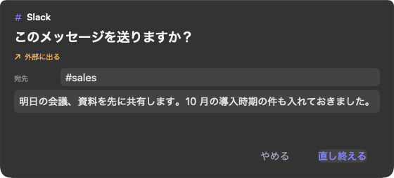
light · 560×254 px (1x) · sha256 f4f1ea5e8dfc9d3e… dark · 560×254 px (1x) · sha256 f4f1ea5e8dfc9d3e…
Trigger / どこから開くか Confirmation で「直す」。 Meaning / 何をする画面か 送る前に本文を書き換える。 Primary action 完了 Secondary action やめる 表示される状態 confirmation（編集中） Esc / keyboard Esc → やめる。 Privacy / external side effect まだ送っていない。 前の画面 dock.confirmation 次の画面 dock.confirmation Window / One Surface Dock（1 枚） Truth invariant — Appearance policy fixed Note 「直す」は検査から押せる目印付き（ProbeButton confirmEdit）。走るものは画面と同じ 1 本。 Source RC RC SHA 85b8333
評価軸: Hierarchy · Density · Alignment · Typography · Contrast · State legibility · Primary-action clarity · Screen occupation · Surface continuity · Calmness · Consistency · Trust/provenance · Error recovery clarity · Competitive polish → KEEP / FIX / NOT_ENOUGH_EVIDENCE
Task Dock — Done / Result 2. Task Dock · dock.result · required=true · status=CAPTURED
light · 520×129 px (1x) · sha256 10aed21f704255ab… dark · 520×129 px (1x) · sha256 10aed21f704255ab…
Trigger / どこから開くか 実行が終わった（success）。 Meaning / 何をする画面か 何が起きたかを 1 行で返し、開ける先があれば示す。 Primary action 開く（結果へ） Secondary action 閉じる 表示される状態 result(success) Esc / keyboard Esc → 閉じる（dismissResult）。 Privacy / external side effect — 前の画面 dock.running 次の画面 voice.idle, main.home Window / One Surface Dock（1 枚） Truth invariant 結果面からも Main View が開く（--selftest entry）。 Appearance policy fixed Note — Source RC RC SHA 85b8333
評価軸: Hierarchy · Density · Alignment · Typography · Contrast · State legibility · Primary-action clarity · Screen occupation · Surface continuity · Calmness · Consistency · Trust/provenance · Error recovery clarity · Competitive polish → KEEP / FIX / NOT_ENOUGH_EVIDENCE
Task Dock — Error / Recovery 2. Task Dock · dock.result-failed · required=true · status=CAPTURED
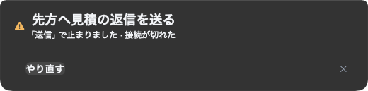
light · 520×129 px (1x) · sha256 e09e291fa0b7d479… dark · 520×129 px (1x) · sha256 e09e291fa0b7d479…
Trigger / どこから開くか 実行が失敗した / 止まった。 Meaning / 何をする画面か 何が失敗したか、次に何ができるか。 Primary action やり直す（同じ入口でもう一度） Secondary action 閉じる 表示される状態 result(failed) Esc / keyboard Esc → 閉じる。 Privacy / external side effect — 前の画面 dock.running 次の画面 voice.idle Window / One Surface Dock（1 枚） Truth invariant 黙って消えない。理由を返す。 Appearance policy fixed Note finishTask(.failed) が結果面を出す（以前は idle に戻って黙って消えていた）。どこで止まったか（失敗した段と detail）を 2 行目に言う。 Source RC RC SHA 85b8333
評価軸: Hierarchy · Density · Alignment · Typography · Contrast · State legibility · Primary-action clarity · Screen occupation · Surface continuity · Calmness · Consistency · Trust/provenance · Error recovery clarity · Competitive polish → KEEP / FIX / NOT_ENOUGH_EVIDENCE
Task Dock — Entering recording 2. Task Dock · dock.entering-recording · required=false · status=NO_CAPTURE_PATH
NO IMAGE — NO_CAPTURE_PATH
Trigger / どこから開くか 「録音を始める」。 Meaning / 何をする画面か Dock が会議 controller へ変わる途中。 Primary action — Secondary action — 表示される状態 enteringRecording Esc / keyboard — Privacy / external side effect — 前の画面 voice.idle 次の画面 meeting.controller Window / One Surface Dock（1 枚） Truth invariant — Appearance policy fixed Note DockPresentation.enteringRecording（会議 Dock へ姿を変える途中）。静止画より strip の対象。 Source — RC SHA 85b8333
評価軸: Hierarchy · Density · Alignment · Typography · Contrast · State legibility · Primary-action clarity · Screen occupation · Surface continuity · Calmness · Consistency · Trust/provenance · Error recovery clarity · Competitive polish → KEEP / FIX / NOT_ENOUGH_EVIDENCE
Meeting — Controller (recording active) 3. Meeting · meeting.controller · required=true · status=CAPTURED
light · 820×76 px (1x) · sha256 cb68169730b21931… dark · 820×76 px (1x) · sha256 cb68169730b21931…
Trigger / どこから開くか 会議アプリ（Google Meet）を検出して録音を始めた。音が届いている。 Meaning / 何をする画面か 録音中。メモ / 字幕 / Ask Astra / 停止 が 1 行に並ぶ。 Primary action 停止 Secondary action メモ / 字幕 / Ask Astra / 秘匿トグル 表示される状態 meeting(expanded: nil) Esc / keyboard Esc は録音を止めない（板を閉じるだけ）。 Privacy / external side effect マイク ON（.meeting = [.microphone]）。system audio は未接続。 前の画面 voice.idle, main.home 次の画面 meeting.notes, meeting.captions, meeting.ask, session.processing Window / One Surface Dock（1 枚） Truth invariant 「録音中」は最初の音声フレームが届いてから。届く前は「準備中…」。 Appearance policy fixed Note — Source RC RC SHA 85b8333
評価軸: Hierarchy · Density · Alignment · Typography · Contrast · State legibility · Primary-action clarity · Screen occupation · Surface continuity · Calmness · Consistency · Trust/provenance · Error recovery clarity · Competitive polish → KEEP / FIX / NOT_ENOUGH_EVIDENCE
Meeting — Recording preparing 3. Meeting · meeting.preparing · required=true · status=CAPTURED
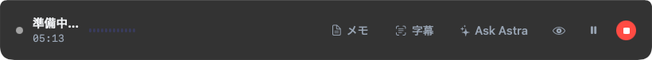
light · 820×76 px (1x) · sha256 5d83c39e698d548f… dark · 820×76 px (1x) · sha256 5d83c39e698d548f…
Trigger / どこから開くか 「録音を始める」直後。 Meaning / 何をする画面か マイクを開いている。まだ録れていない。 Primary action （待つ） Secondary action 停止 表示される状態 meeting（captureLive == false） Esc / keyboard — Privacy / external side effect マイクを開こうとしている。 前の画面 dock.entering-recording 次の画面 meeting.controller Window / One Surface Dock（1 枚） Truth invariant 「録音中」と名乗らない（stuckPreparingAfterLive = false も同時に）。 Appearance policy fixed Note RecordingWorkspaceState.beginPreparingForShot で「まだ 1 フレームも届いていない」姿を固定する（実マイクの level で消えないよう撮り終わるまで止める）。 Source RC RC SHA 85b8333
評価軸: Hierarchy · Density · Alignment · Typography · Contrast · State legibility · Primary-action clarity · Screen occupation · Surface continuity · Calmness · Consistency · Trust/provenance · Error recovery clarity · Competitive polish → KEEP / FIX / NOT_ENOUGH_EVIDENCE
Meeting — Paused 3. Meeting · meeting.paused · required=true · status=CAPTURED
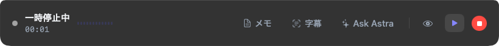
light · 820×76 px (1x) · sha256 ff7edc17f06e37d3… dark · 820×76 px (1x) · sha256 ff7edc17f06e37d3…
Trigger / どこから開くか Pause。 Meaning / 何をする画面か 録音を止めている（音は入らない）。再開できる。 Primary action 再開（▶） Secondary action 停止 表示される状態 meeting（paused） Esc / keyboard — Privacy / external side effect マイクは開いたまま音を捨てるのか、閉じるのかを面で言う。 前の画面 meeting.controller 次の画面 meeting.controller Window / One Surface Dock（1 枚） Truth invariant 一時停止中は文字起こしが増えない。 Appearance policy fixed Note Dock のコントローラに一時停止 / 再開の手と「一時停止中」の見出しを足した（2026-09-05）。録音面の pill と同じ togglePause を通る。録音面の姿は recording.paused（optional）。 Source RC RC SHA 85b8333
評価軸: Hierarchy · Density · Alignment · Typography · Contrast · State legibility · Primary-action clarity · Screen occupation · Surface continuity · Calmness · Consistency · Trust/provenance · Error recovery clarity · Competitive polish → KEEP / FIX / NOT_ENOUGH_EVIDENCE
Recording Workspace — Paused 3. Meeting · recording.paused · required=false · status=CAPTURED
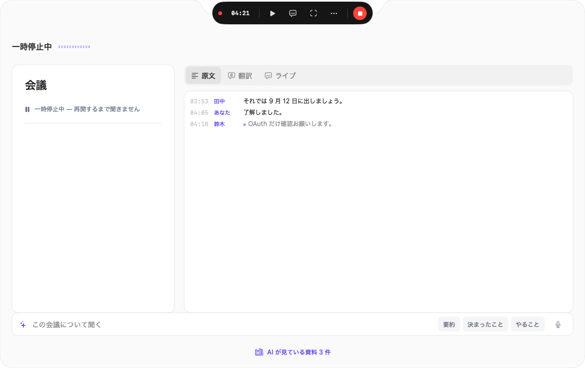
light · 1080×680 px (1x) · sha256 d0c45f043d689d80… 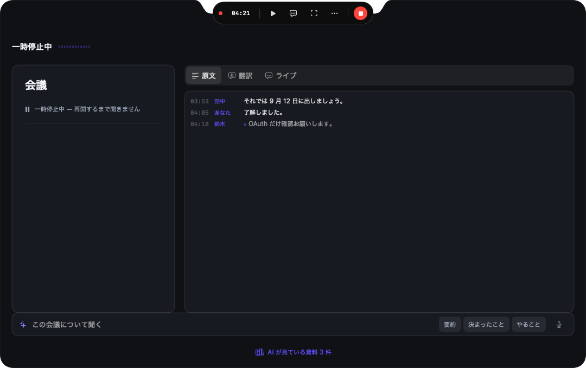
dark · 1080×680 px (1x) · sha256 0520fb09fbdb18e4…
Trigger / どこから開くか 録音面の pill の一時停止。 Meaning / 何をする画面か 止まっている間は文字起こしが増えない。 Primary action 再開（pill の ▶） Secondary action 停止 表示される状態 isPaused = true Esc / keyboard — Privacy / external side effect — 前の画面 recording.workspace 次の画面 recording.workspace Window / One Surface Workspace（録音面） Truth invariant 見出しが「一時停止中」、点は灰。 Appearance policy adaptive Note — Source RC RC SHA 85b8333
評価軸: Hierarchy · Density · Alignment · Typography · Contrast · State legibility · Primary-action clarity · Screen occupation · Surface continuity · Calmness · Consistency · Trust/provenance · Error recovery clarity · Competitive polish → KEEP / FIX / NOT_ENOUGH_EVIDENCE
Meeting — Live Notes 3. Meeting · meeting.notes · required=true · status=CAPTURED
light · 820×357 px (1x) · sha256 4011a2edc15c9af0… dark · 820×357 px (1x) · sha256 4011a2edc15c9af0…
Trigger / どこから開くか controller の「メモ」。 Meaning / 何をする画面か 会議中に決定 / 宿題 / 論点が下へ育つ。見出し行は消えない。 Primary action メモを読む / 書き足す Secondary action 字幕 / Ask へ切替、閉じる 表示される状態 meeting(expanded: .notes) Esc / keyboard Esc → 板を閉じる（録音は続く）。 Privacy / external side effect 要約は端末内の言語モデル。 前の画面 meeting.controller 次の画面 meeting.workspace, meeting.controller Window / One Surface Dock（1 枚、下へ伸びる） Truth invariant 見出し（録音中・メモ・字幕・Ask・停止）は板が開いても残る（349007f）。 Appearance policy fixed Note — Source RC RC SHA 85b8333
評価軸: Hierarchy · Density · Alignment · Typography · Contrast · State legibility · Primary-action clarity · Screen occupation · Surface continuity · Calmness · Consistency · Trust/provenance · Error recovery clarity · Competitive polish → KEEP / FIX / NOT_ENOUGH_EVIDENCE
Meeting — Captions 3. Meeting · meeting.captions · required=true · status=CAPTURED
light · 820×460 px (1x) · sha256 d50dcf807457c2b7… dark · 820×460 px (1x) · sha256 d50dcf807457c2b7…
Trigger / どこから開くか controller の「字幕」。 Meaning / 何をする画面か いま話されていることが文字で流れる。 Primary action 読む Secondary action メモ / Ask へ切替、閉じる 表示される状態 meeting(expanded: .captions) Esc / keyboard Esc → 板を閉じる。 Privacy / external side effect STT は端末内。 前の画面 meeting.controller 次の画面 meeting.controller Window / One Surface Dock（1 枚） Truth invariant 字幕は話者と時刻が付く。 Appearance policy fixed Note — Source RC RC SHA 85b8333
評価軸: Hierarchy · Density · Alignment · Typography · Contrast · State legibility · Primary-action clarity · Screen occupation · Surface continuity · Calmness · Consistency · Trust/provenance · Error recovery clarity · Competitive polish → KEEP / FIX / NOT_ENOUGH_EVIDENCE
Meeting — Ask Astra 3. Meeting · meeting.ask · required=true · status=CAPTURED
light · 820×460 px (1x) · sha256 658fab77979e3d0e… 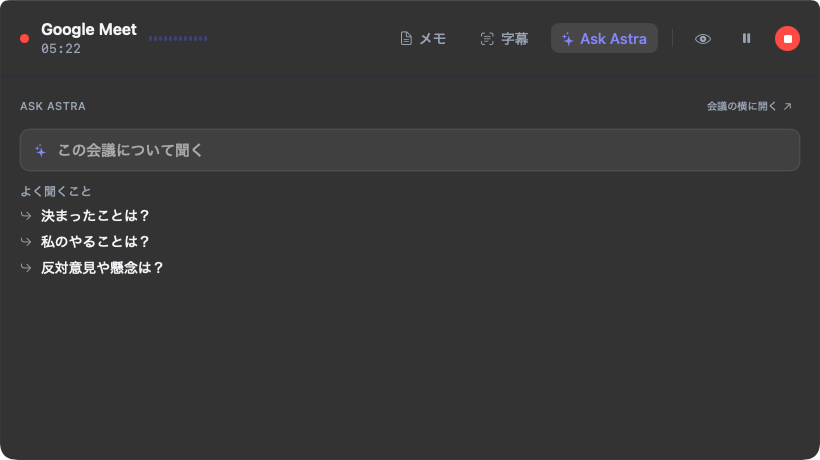
dark · 820×460 px (1x) · sha256 658fab77979e3d0e…
Trigger / どこから開くか controller の「Ask Astra」。 Meaning / 何をする画面か 会議の内容について、その場で訊く。 Primary action 送る Secondary action 閉じる 表示される状態 meeting(expanded: .ask) Esc / keyboard Esc → 板を閉じる。 Privacy / external side effect 端末内。 前の画面 meeting.controller 次の画面 meeting.controller Window / One Surface Dock（1 枚） Truth invariant — Appearance policy fixed Note MeetingPanel.ask（AskInDockField）は実装と geometry（meetingPanel-ask）にあるが、dock8 は notes / captions しか撮らない。次 RC で dock8 に 1 面足す。 Source RC RC SHA 85b8333
評価軸: Hierarchy · Density · Alignment · Typography · Contrast · State legibility · Primary-action clarity · Screen occupation · Surface continuity · Calmness · Consistency · Trust/provenance · Error recovery clarity · Competitive polish → KEEP / FIX / NOT_ENOUGH_EVIDENCE
Meeting — Expanded Workspace 3. Meeting · meeting.workspace · required=true · status=CAPTURED
light · 1080×680 px (1x) · sha256 12498f64133974da… dark · 1080×680 px (1x) · sha256 2236044ba7d8219e…
Trigger / どこから開くか メモから「広げる」。 Meaning / 何をする画面か 会議の全体（文字起こし / メモ / 出典）を大きい面で扱う。 Primary action 読む・編集する Secondary action Dock へ戻す 表示される状態 workspaceOpened Esc / keyboard Esc → 閉じる。 Privacy / external side effect 同上。 前の画面 meeting.notes 次の画面 recording.transcript, recording.rag, meeting.controller Window / One Surface Workspace（2 枚目。T2 で測る） Truth invariant Dock の見出しはそのまま残る。 Appearance policy adaptive Note — Source RC RC SHA 85b8333
評価軸: Hierarchy · Density · Alignment · Typography · Contrast · State legibility · Primary-action clarity · Screen occupation · Surface continuity · Calmness · Consistency · Trust/provenance · Error recovery clarity · Competitive polish → KEEP / FIX / NOT_ENOUGH_EVIDENCE
Recording Workspace — Overview 3. Meeting · recording.workspace · required=true · status=CAPTURED
light · 1080×680 px (1x) · sha256 90f36ebd2045c140… dark · 1080×680 px (1x) · sha256 4afd023cd271db5c…
Trigger / どこから開くか showRecordingWorkspace（demo データ）。 Meaning / 何をする画面か 録音中の作業面。左に文字起こし、右に道具。 Primary action 文字起こしを追う Secondary action RAG / エージェント 表示される状態 selectedTool = .transcript, ragOpen = false Esc / keyboard Esc → 閉じる。 Privacy / external side effect 端末内。 前の画面 meeting.workspace 次の画面 recording.transcript, recording.rag Window / One Surface Workspace Truth invariant — Appearance policy adaptive Note — Source RC RC SHA 85b8333
評価軸: Hierarchy · Density · Alignment · Typography · Contrast · State legibility · Primary-action clarity · Screen occupation · Surface continuity · Calmness · Consistency · Trust/provenance · Error recovery clarity · Competitive polish → KEEP / FIX / NOT_ENOUGH_EVIDENCE
Recording Workspace — Long transcript 3. Meeting · recording.transcript · required=true · status=CAPTURED
light · 1080×680 px (1x) · sha256 0d2ff7118f1e2e56… dark · 1080×680 px (1x) · sha256 a8f065674f17b7a9…
Trigger / どこから開くか 文字起こしが長くなった。 Meaning / 何をする画面か 長くなっても最新が読める。 Primary action 読む Secondary action — 表示される状態 transcript 多数 Esc / keyboard — Privacy / external side effect 端末内。 前の画面 recording.workspace 次の画面 — Window / One Surface Workspace Truth invariant 末尾に追従する。 Appearance policy adaptive Note — Source RC RC SHA 85b8333
評価軸: Hierarchy · Density · Alignment · Typography · Contrast · State legibility · Primary-action clarity · Screen occupation · Surface continuity · Calmness · Consistency · Trust/provenance · Error recovery clarity · Competitive polish → KEEP / FIX / NOT_ENOUGH_EVIDENCE
Recording Workspace — RAG panel 3. Meeting · recording.rag · required=true · status=CAPTURED
light · 1080×680 px (1x) · sha256 ad16e51372fc91e2… dark · 1080×680 px (1x) · sha256 1ef1523fcc75b35d…
Trigger / どこから開くか RAG を開く。 Meaning / 何をする画面か 会議中に手元の資料を引く。 Primary action 検索 Secondary action 閉じる 表示される状態 ragOpen = true Esc / keyboard Esc → 閉じる。 Privacy / external side effect 検索は端末内。 前の画面 recording.workspace 次の画面 recording.workspace Window / One Surface Workspace Truth invariant — Appearance policy adaptive Note — Source RC RC SHA 85b8333
評価軸: Hierarchy · Density · Alignment · Typography · Contrast · State legibility · Primary-action clarity · Screen occupation · Surface continuity · Calmness · Consistency · Trust/provenance · Error recovery clarity · Competitive polish → KEEP / FIX / NOT_ENOUGH_EVIDENCE
Recording Workspace — Agent timeline 3. Meeting · recording.agent-timeline · required=true · status=CAPTURED
light · 1080×680 px (1x) · sha256 9267b6270163557c… dark · 1080×680 px (1x) · sha256 7b642119f81ab796…
Trigger / どこから開くか 会議中に依頼を実行した。 Meaning / 何をする画面か 文字起こしを読む → 答えをまとめる、の段が見える。 Primary action — Secondary action — 表示される状態 task running（steps） Esc / keyboard — Privacy / external side effect 端末内。 前の画面 recording.workspace 次の画面 — Window / One Surface Workspace Truth invariant — Appearance policy adaptive Note — Source RC RC SHA 85b8333
評価軸: Hierarchy · Density · Alignment · Typography · Contrast · State legibility · Primary-action clarity · Screen occupation · Surface continuity · Calmness · Consistency · Trust/provenance · Error recovery clarity · Competitive polish → KEEP / FIX / NOT_ENOUGH_EVIDENCE
Recording Workspace — Meeting canvas 3. Meeting · recording.meeting-canvas · required=true · status=CAPTURED
light · 1080×680 px (1x) · sha256 fe4404896eefca95… dark · 1080×680 px (1x) · sha256 4979c3d2437bb59f…
Trigger / どこから開くか 決定 / 宿題が更新された。 Meaning / 何をする画面か 決定・宿題・論点の板。 Primary action — Secondary action — 表示される状態 canvas（decisions / actions） Esc / keyboard — Privacy / external side effect 端末内。 前の画面 recording.workspace 次の画面 provenance.meeting-detail Window / One Surface Workspace Truth invariant — Appearance policy adaptive Note — Source RC RC SHA 85b8333
評価軸: Hierarchy · Density · Alignment · Typography · Contrast · State legibility · Primary-action clarity · Screen occupation · Surface continuity · Calmness · Consistency · Trust/provenance · Error recovery clarity · Competitive polish → KEEP / FIX / NOT_ENOUGH_EVIDENCE
Main — Home 4. Main Window · main.home · required=true · status=CAPTURED
light · 1240×820 px (1x) · sha256 09a4e1125efd3685… dark · 1240×820 px (1x) · sha256 058de83e7bafe18c…
Trigger / どこから開くか ⌘O / メニュー「Astra を開く」/ Dock アイコン / 結果面。 Meaning / 何をする画面か 挨拶、依頼の入口、録音を始める、録りかけ、予定。 Primary action 録音を始める Secondary action 何を終わらせますか？（依頼） 表示される状態 idle / recording now / upcoming / 録りかけあり Esc / keyboard ⌘O。 Privacy / external side effect 予定はカレンダー許可があるときだけ（purpose-first）。 前の画面 — 次の画面 main.home-recording-now, main.new-recording-sheet, main.library-meetings Window / One Surface Main Window Truth invariant sidebar は Home / Work / Library / Apps の 4 つ。 Appearance policy adaptive Note — Source RC RC SHA 85b8333
評価軸: Hierarchy · Density · Alignment · Typography · Contrast · State legibility · Primary-action clarity · Screen occupation · Surface continuity · Calmness · Consistency · Trust/provenance · Error recovery clarity · Competitive polish → KEEP / FIX / NOT_ENOUGH_EVIDENCE
Main — Home (recording now) 4. Main Window · main.home-recording-now · required=true · status=CAPTURED
light · 1240×820 px (1x) · sha256 ba1f88bc1042cdef… dark · 1240×820 px (1x) · sha256 fe303445a9fe881d…
Trigger / どこから開くか 録音中に Home を開いた。 Meaning / 何をする画面か いま録れていることが Home でも分かる。 Primary action 停止 / 開く Secondary action — 表示される状態 RecordingNowCard Esc / keyboard — Privacy / external side effect — 前の画面 main.home 次の画面 session.recording Window / One Surface Main Window Truth invariant Dock と同じ状態を言う（矛盾しない）。 Appearance policy adaptive Note — Source RC RC SHA 85b8333
評価軸: Hierarchy · Density · Alignment · Typography · Contrast · State legibility · Primary-action clarity · Screen occupation · Surface continuity · Calmness · Consistency · Trust/provenance · Error recovery clarity · Competitive polish → KEEP / FIX / NOT_ENOUGH_EVIDENCE
Main — Home (upcoming meeting) 4. Main Window · main.home-upcoming · required=true · status=CAPTURED
light · 1240×820 px (1x) · sha256 592f33a8c072c1a4… dark · 1240×820 px (1x) · sha256 452efc8b3f7a7894…
Trigger / どこから開くか 24 時間以内に予定がある。 Meaning / 何をする画面か 次の会議を録音の入口に変える。 Primary action 録音を開始 Secondary action — 表示される状態 HomeAttention Esc / keyboard — Privacy / external side effect カレンダーは許可後だけ読む。 前の画面 main.home 次の画面 session.recording Window / One Surface Main Window Truth invariant — Appearance policy adaptive Note — Source RC RC SHA 85b8333
評価軸: Hierarchy · Density · Alignment · Typography · Contrast · State legibility · Primary-action clarity · Screen occupation · Surface continuity · Calmness · Consistency · Trust/provenance · Error recovery clarity · Competitive polish → KEEP / FIX / NOT_ENOUGH_EVIDENCE
Main — New recording sheet 4. Main Window · main.new-recording-sheet · required=true · status=CAPTURED
light · 1240×820 px (1x) · sha256 9473e89c7cc260fc… dark · 1240×820 px (1x) · sha256 8fc9627119dacaff…
Trigger / どこから開くか 「録音を始める」の ⌄。 Meaning / 何をする画面か 題名 / 出どころ / プロジェクトを決めて録る。 Primary action 開始 Secondary action キャンセル 表示される状態 sheet Esc / keyboard Esc → 閉じる。 Privacy / external side effect — 前の画面 main.home 次の画面 session.recording Window / One Surface Main Window（sheet） Truth invariant 前回の設定が既定。 Appearance policy adaptive Note — Source RC RC SHA 85b8333
評価軸: Hierarchy · Density · Alignment · Typography · Contrast · State legibility · Primary-action clarity · Screen occupation · Surface continuity · Calmness · Consistency · Trust/provenance · Error recovery clarity · Competitive polish → KEEP / FIX / NOT_ENOUGH_EVIDENCE
Main — Work / Tasks 4. Main Window · main.work-tasks · required=true · status=CAPTURED
light · 1240×820 px (1x) · sha256 e395649b95d7746b… dark · 1240×820 px (1x) · sha256 88fca08514757beb…
Trigger / どこから開くか sidebar Work。 Meaning / 何をする画面か 依頼の一覧と状態。 Primary action 開く Secondary action Agents へ 表示される状態 tasks Esc / keyboard — Privacy / external side effect — 前の画面 main.home 次の画面 main.work-agents Window / One Surface Main Window Truth invariant 見出しが状態と一致（--selftest navtitle）。 Appearance policy adaptive Note — Source RC RC SHA 85b8333
評価軸: Hierarchy · Density · Alignment · Typography · Contrast · State legibility · Primary-action clarity · Screen occupation · Surface continuity · Calmness · Consistency · Trust/provenance · Error recovery clarity · Competitive polish → KEEP / FIX / NOT_ENOUGH_EVIDENCE
Main — Work / Agents 4. Main Window · main.work-agents · required=true · status=CAPTURED
light · 1240×820 px (1x) · sha256 4defd6455f355250… dark · 1240×820 px (1x) · sha256 30925d8d0dc683dc…
Trigger / どこから開くか Work の Agents タブ。 Meaning / 何をする画面か 動いている / 動いた agent。 Primary action 開く Secondary action — 表示される状態 agents Esc / keyboard — Privacy / external side effect — 前の画面 main.work-tasks 次の画面 — Window / One Surface Main Window Truth invariant — Appearance policy adaptive Note — Source RC RC SHA 85b8333
評価軸: Hierarchy · Density · Alignment · Typography · Contrast · State legibility · Primary-action clarity · Screen occupation · Surface continuity · Calmness · Consistency · Trust/provenance · Error recovery clarity · Competitive polish → KEEP / FIX / NOT_ENOUGH_EVIDENCE
Main — Library / Meetings 4. Main Window · main.library-meetings · required=true · status=CAPTURED
light · 1240×820 px (1x) · sha256 ad973f7979557b69… dark · 1240×820 px (1x) · sha256 752966de722c2242…
Trigger / どこから開くか sidebar Library。 Meaning / 何をする画面か 録った会議の一覧。 Primary action 1 件を開く Secondary action Files へ 表示される状態 meetings Esc / keyboard — Privacy / external side effect 全部端末内。 前の画面 main.home 次の画面 provenance.meeting-detail Window / One Surface Main Window Truth invariant 1 件を開いても sidebar で出られる。 Appearance policy adaptive Note — Source RC RC SHA 85b8333
評価軸: Hierarchy · Density · Alignment · Typography · Contrast · State legibility · Primary-action clarity · Screen occupation · Surface continuity · Calmness · Consistency · Trust/provenance · Error recovery clarity · Competitive polish → KEEP / FIX / NOT_ENOUGH_EVIDENCE
Main — Library / Files 4. Main Window · main.library-files · required=true · status=CAPTURED
light · 1240×820 px (1x) · sha256 bd4f3abaa087cee6… dark · 1240×820 px (1x) · sha256 33d89149ccc6a541…
Trigger / どこから開くか Library の Files タブ。 Meaning / 何をする画面か 手元の資料（RAG の元）。 Primary action 追加 / 開く Secondary action — 表示される状態 files Esc / keyboard — Privacy / external side effect 索引は端末内。 前の画面 main.library-meetings 次の画面 — Window / One Surface Main Window Truth invariant — Appearance policy adaptive Note — Source RC RC SHA 85b8333
評価軸: Hierarchy · Density · Alignment · Typography · Contrast · State legibility · Primary-action clarity · Screen occupation · Surface continuity · Calmness · Consistency · Trust/provenance · Error recovery clarity · Competitive polish → KEEP / FIX / NOT_ENOUGH_EVIDENCE
Main — Apps / Plugins 4. Main Window · main.apps-plugins · required=true · status=CAPTURED
light · 1240×820 px (1x) · sha256 1ee751a6482e045b… dark · 1240×820 px (1x) · sha256 f3d6812b8d4d76c0…
Trigger / どこから開くか sidebar Apps。 Meaning / 何をする画面か 入れてある plugin と有効 / 無効。 Primary action 有効にする Secondary action Connectors へ 表示される状態 plugins Esc / keyboard — Privacy / external side effect plugin は端末で動く。 前の画面 main.home 次の画面 main.apps-connectors Window / One Surface Main Window Truth invariant — Appearance policy adaptive Note — Source RC RC SHA 85b8333
評価軸: Hierarchy · Density · Alignment · Typography · Contrast · State legibility · Primary-action clarity · Screen occupation · Surface continuity · Calmness · Consistency · Trust/provenance · Error recovery clarity · Competitive polish → KEEP / FIX / NOT_ENOUGH_EVIDENCE
Main — Apps / Connectors 4. Main Window · main.apps-connectors · required=true · status=CAPTURED
light · 1240×820 px (1x) · sha256 0e276faceea33531… dark · 1240×820 px (1x) · sha256 49631be23dfbcdca…
Trigger / どこから開くか Apps の Connectors タブ。 Meaning / 何をする画面か 外部サービスとの接続と状態。 Primary action 接続 Secondary action 切る 表示される状態 connectors Esc / keyboard — Privacy / external side effect 鍵は Keychain。端末から出さない。 前の画面 main.apps-plugins 次の画面 — Window / One Surface Main Window Truth invariant 接続状態を偽らない（--selftest connectorstate）。 Appearance policy adaptive Note — Source RC RC SHA 85b8333
評価軸: Hierarchy · Density · Alignment · Typography · Contrast · State legibility · Primary-action clarity · Screen occupation · Surface continuity · Calmness · Consistency · Trust/provenance · Error recovery clarity · Competitive polish → KEEP / FIX / NOT_ENOUGH_EVIDENCE
Main — UI scale: compact 4. Main Window · main.scale-compact · required=false · status=CAPTURED
light · 1240×820 px (1x) · sha256 1072891b1bab2b54… dark · 1240×820 px (1x) · sha256 4bbd58ad16410335…
Trigger / どこから開くか UIScale compact。 Meaning / 何をする画面か 密度を上げた Home。 Primary action — Secondary action — 表示される状態 compact Esc / keyboard — Privacy / external side effect — 前の画面 main.home 次の画面 — Window / One Surface Main Window Truth invariant — Appearance policy adaptive Note — Source RC RC SHA 85b8333
評価軸: Hierarchy · Density · Alignment · Typography · Contrast · State legibility · Primary-action clarity · Screen occupation · Surface continuity · Calmness · Consistency · Trust/provenance · Error recovery clarity · Competitive polish → KEEP / FIX / NOT_ENOUGH_EVIDENCE
Main — UI scale: comfortable (default) 4. Main Window · main.scale-comfortable · required=false · status=CAPTURED
light · 1240×820 px (1x) · sha256 592f33a8c072c1a4… dark · 1240×820 px (1x) · sha256 452efc8b3f7a7894…
Trigger / どこから開くか 既定。 Meaning / 何をする画面か — Primary action — Secondary action — 表示される状態 comfortable Esc / keyboard — Privacy / external side effect — 前の画面 main.home 次の画面 — Window / One Surface Main Window Truth invariant — Appearance policy adaptive Note — Source RC RC SHA 85b8333
評価軸: Hierarchy · Density · Alignment · Typography · Contrast · State legibility · Primary-action clarity · Screen occupation · Surface continuity · Calmness · Consistency · Trust/provenance · Error recovery clarity · Competitive polish → KEEP / FIX / NOT_ENOUGH_EVIDENCE
Main — UI scale: large 4. Main Window · main.scale-large · required=false · status=CAPTURED
light · 1240×820 px (1x) · sha256 49324ba69b16fc76… dark · 1240×820 px (1x) · sha256 4c3dd96b89f5403d…
Trigger / どこから開くか UIScale large。 Meaning / 何をする画面か — Primary action — Secondary action — 表示される状態 large Esc / keyboard — Privacy / external side effect — 前の画面 main.home 次の画面 — Window / One Surface Main Window Truth invariant — Appearance policy adaptive Note — Source RC RC SHA 85b8333
評価軸: Hierarchy · Density · Alignment · Typography · Contrast · State legibility · Primary-action clarity · Screen occupation · Surface continuity · Calmness · Consistency · Trust/provenance · Error recovery clarity · Competitive polish → KEEP / FIX / NOT_ENOUGH_EVIDENCE
Session — Recording (Home card) 5. Post-meeting / Provenance · session.recording · required=true · status=CAPTURED
light · 1240×820 px (1x) · sha256 c02912d88ecea92d… dark · 1240×820 px (1x) · sha256 2efe9ef59240dc92…
Trigger / どこから開くか sessions.begin（Product Weekly / Google Meet）。 Meaning / 何をする画面か 同じ id の会議が Home で「録音中」。 Primary action 停止 Secondary action 開く 表示される状態 status = recording Esc / keyboard — Privacy / external side effect — 前の画面 main.home 次の画面 session.processing Window / One Surface Main Window Truth invariant 同じ id が姿を変える（別カードにならない）。 Appearance policy adaptive Note — Source RC RC SHA 85b8333
評価軸: Hierarchy · Density · Alignment · Typography · Contrast · State legibility · Primary-action clarity · Screen occupation · Surface continuity · Calmness · Consistency · Trust/provenance · Error recovery clarity · Competitive polish → KEEP / FIX / NOT_ENOUGH_EVIDENCE
Session — Processing 5. Post-meeting / Provenance · session.processing · required=true · status=CAPTURED
light · 1240×820 px (1x) · sha256 b5ba3dbb38304ca9… dark · 1240×820 px (1x) · sha256 aa5c83c8ee0843d8…
Trigger / どこから開くか 録り終えて読み取り中。 Meaning / 何をする画面か 段階（processingStage）が見える。まだ ready ではない。 Primary action （待つ） Secondary action — 表示される状態 status = processing Esc / keyboard — Privacy / external side effect 端末内。 前の画面 session.recording 次の画面 session.ready Window / One Surface Main Window Truth invariant 勝手に ready にしない。 Appearance policy adaptive Note — Source RC RC SHA 85b8333
評価軸: Hierarchy · Density · Alignment · Typography · Contrast · State legibility · Primary-action clarity · Screen occupation · Surface continuity · Calmness · Consistency · Trust/provenance · Error recovery clarity · Competitive polish → KEEP / FIX / NOT_ENOUGH_EVIDENCE
Session — Ready 5. Post-meeting / Provenance · session.ready · required=true · status=CAPTURED
light · 1240×820 px (1x) · sha256 08f8bb54f9a7b45f… dark · 1240×820 px (1x) · sha256 adb8c8eb35b95571…
Trigger / どこから開くか 読み取りが終わった。 Meaning / 何をする画面か 要約が出て、開ける。 Primary action 開く Secondary action プロジェクトへ 表示される状態 status = ready Esc / keyboard — Privacy / external side effect — 前の画面 session.processing 次の画面 session.detail Window / One Surface Main Window Truth invariant — Appearance policy adaptive Note — Source RC RC SHA 85b8333
評価軸: Hierarchy · Density · Alignment · Typography · Contrast · State legibility · Primary-action clarity · Screen occupation · Surface continuity · Calmness · Consistency · Trust/provenance · Error recovery clarity · Competitive polish → KEEP / FIX / NOT_ENOUGH_EVIDENCE
Session — Filed to project 5. Post-meeting / Provenance · session.project · required=true · status=CAPTURED
light · 1240×820 px (1x) · sha256 592f33a8c072c1a4… dark · 1240×820 px (1x) · sha256 452efc8b3f7a7894…
Trigger / どこから開くか visibility = workspace, project = Product。 Meaning / 何をする画面か 会議がプロジェクトに入った。 Primary action 開く Secondary action — 表示される状態 ready + project Esc / keyboard — Privacy / external side effect 共有範囲（visibility）が読める。 前の画面 session.ready 次の画面 session.detail Window / One Surface Main Window Truth invariant — Appearance policy adaptive Note — Source RC RC SHA 85b8333
評価軸: Hierarchy · Density · Alignment · Typography · Contrast · State legibility · Primary-action clarity · Screen occupation · Surface continuity · Calmness · Consistency · Trust/provenance · Error recovery clarity · Competitive polish → KEEP / FIX / NOT_ENOUGH_EVIDENCE
Session — Detail (opened) 5. Post-meeting / Provenance · session.detail · required=true · status=CAPTURED
light · 1240×820 px (1x) · sha256 5bc15b6d4de51787… dark · 1240×820 px (1x) · sha256 f1ba1c7ac5762981…
Trigger / どこから開くか MainNav.openSession。 Meaning / 何をする画面か 1 件の会議。要約・決定・宿題・文字起こし。 Primary action 出典へ Secondary action 戻る 表示される状態 detail Esc / keyboard — Privacy / external side effect — 前の画面 session.ready 次の画面 provenance.meeting-detail Window / One Surface Main Window Truth invariant sidebar で出られる。 Appearance policy adaptive Note — Source RC RC SHA 85b8333
評価軸: Hierarchy · Density · Alignment · Typography · Contrast · State legibility · Primary-action clarity · Screen occupation · Surface continuity · Calmness · Consistency · Trust/provenance · Error recovery clarity · Competitive polish → KEEP / FIX / NOT_ENOUGH_EVIDENCE
Meeting detail — Summary / Decisions / Actions 5. Post-meeting / Provenance · provenance.meeting-detail · required=true · status=CAPTURED
light · 1240×820 px (1x) · sha256 175435d450731ed1… dark · 1240×820 px (1x) · sha256 adfd6ba08fcb10c1…
Trigger / どこから開くか Library から 1 件（preview データ）。 Meaning / 何をする画面か 要約・決定・宿題が出典つきで並ぶ。 Primary action 出典（Source）へ Secondary action 文字起こし / 音声 表示される状態 detail Esc / keyboard — Privacy / external side effect — 前の画面 main.library-meetings 次の画面 provenance.source Window / One Surface Main Window Truth invariant 決定には出典がある。 Appearance policy adaptive Note — Source RC RC SHA 85b8333
評価軸: Hierarchy · Density · Alignment · Typography · Contrast · State legibility · Primary-action clarity · Screen occupation · Surface continuity · Calmness · Consistency · Trust/provenance · Error recovery clarity · Competitive polish → KEEP / FIX / NOT_ENOUGH_EVIDENCE
Journey B — Library after ending 5. Post-meeting / Provenance · provenance.library-after-end · required=true · status=CAPTURED
light · 1240×820 px (1x) · sha256 d667f9ac848c35cc…
Trigger / どこから開くか 会議を終えて Library へ。 Meaning / 何をする画面か いま終えた会議が一覧の先頭に居る。 Primary action 開く Secondary action — 表示される状態 — Esc / keyboard — Privacy / external side effect — 前の画面 meeting.controller 次の画面 provenance.source Window / One Surface Main Window Truth invariant 終えた直後に見つかる。 Appearance policy adaptive Note — Source RC RC SHA 85b8333
評価軸: Hierarchy · Density · Alignment · Typography · Contrast · State legibility · Primary-action clarity · Screen occupation · Surface continuity · Calmness · Consistency · Trust/provenance · Error recovery clarity · Competitive polish → KEEP / FIX / NOT_ENOUGH_EVIDENCE
Journey B — Selected source 5. Post-meeting / Provenance · provenance.source · required=true · status=CAPTURED
light · 1240×820 px (1x) · sha256 c4ec21e2e58a3ffb…
Trigger / どこから開くか 決定の [Source]。 Meaning / 何をする画面か その決定がどの発言から来たか。文字起こしの該当行へ飛ぶ。 Primary action 音声へ飛ぶ Secondary action 戻る 表示される状態 source selected Esc / keyboard — Privacy / external side effect — 前の画面 provenance.meeting-detail 次の画面 provenance.reopened Window / One Surface Main Window Truth invariant 音声の jump は静止画で区別できない。REAL_MEETING の Source jump 行で確かめる。 Appearance policy adaptive Note — Source RC RC SHA 85b8333
評価軸: Hierarchy · Density · Alignment · Typography · Contrast · State legibility · Primary-action clarity · Screen occupation · Surface continuity · Calmness · Consistency · Trust/provenance · Error recovery clarity · Competitive polish → KEEP / FIX / NOT_ENOUGH_EVIDENCE
Journey B — Reopened later 5. Post-meeting / Provenance · provenance.reopened · required=true · status=CAPTURED
light · 1240×820 px (1x) · sha256 e1ac66f74b7c471d…
Trigger / どこから開くか 閉じて、後で開き直す。 Meaning / 何をする画面か 同じものが同じ姿で戻る（Library persistence）。 Primary action — Secondary action — 表示される状態 — Esc / keyboard — Privacy / external side effect — 前の画面 provenance.source 次の画面 — Window / One Surface Main Window Truth invariant — Appearance policy adaptive Note — Source RC RC SHA 85b8333
評価軸: Hierarchy · Density · Alignment · Typography · Contrast · State legibility · Primary-action clarity · Screen occupation · Surface continuity · Calmness · Consistency · Trust/provenance · Error recovery clarity · Competitive polish → KEEP / FIX / NOT_ENOUGH_EVIDENCE
System — Microphone denied 6. System / Recovery · system.mic-denied · required=true · status=CAPTURED
light · 1080×680 px (1x) · sha256 71b377811347ab96… dark · 1080×680 px (1x) · sha256 8ae10067853a0a73…
Trigger / どこから開くか マイク拒否のまま声で頼もうとした。 Meaning / 何をする画面か 「声で頼むにはマイクが要ります。」と、回復の道（許可…）。 Primary action 許可…（システム設定へ） Secondary action 閉じる 表示される状態 denied Esc / keyboard Esc → 閉じる。 Privacy / external side effect 求めるのは必要になった瞬間だけ（purpose-first）。 前の画面 voice.idle 次の画面 system.mic-recovered Window / One Surface Dock（1 枚） Truth invariant 起動時に一括で求めない。理由が先に読める。 Appearance policy adaptive Note — Source RC RC SHA 85b8333
評価軸: Hierarchy · Density · Alignment · Typography · Contrast · State legibility · Primary-action clarity · Screen occupation · Surface continuity · Calmness · Consistency · Trust/provenance · Error recovery clarity · Competitive polish → KEEP / FIX / NOT_ENOUGH_EVIDENCE
Journey C — Recovered after permission 6. System / Recovery · system.mic-recovered · required=true · status=CAPTURED
light · 820×76 px (1x) · sha256 fc04ebfacf26efed…
Trigger / どこから開くか 許可したあと戻ってきた。 Meaning / 何をする画面か その場で続きが始まる。 Primary action 話す Secondary action — 表示される状態 — Esc / keyboard — Privacy / external side effect — 前の画面 system.mic-denied 次の画面 voice.listening Window / One Surface Dock（1 枚） Truth invariant 再起動を求めない。 Appearance policy adaptive Note — Source RC RC SHA 85b8333
評価軸: Hierarchy · Density · Alignment · Typography · Contrast · State legibility · Primary-action clarity · Screen occupation · Surface continuity · Calmness · Consistency · Trust/provenance · Error recovery clarity · Competitive polish → KEEP / FIX / NOT_ENOUGH_EVIDENCE
Journey C — After sharing (secret mode) 6. System / Recovery · system.after-sharing · required=true · status=CAPTURED
light · 820×76 px (1x) · sha256 653cd7dc1a414701…
Trigger / どこから開くか 画面共有のあと。 Meaning / 何をする画面か 共有中に映らない設定が戻る / 戻せる。 Primary action — Secondary action — 表示される状態 — Esc / keyboard — Privacy / external side effect 秘匿 ON で画面キャプチャから消える（--selftest secret）。 前の画面 meeting.controller 次の画面 — Window / One Surface Dock（1 枚） Truth invariant — Appearance policy adaptive Note — Source RC RC SHA 85b8333
評価軸: Hierarchy · Density · Alignment · Typography · Contrast · State legibility · Primary-action clarity · Screen occupation · Surface continuity · Calmness · Consistency · Trust/provenance · Error recovery clarity · Competitive polish → KEEP / FIX / NOT_ENOUGH_EVIDENCE
Journey C — Confirmation, cancelled 6. System / Recovery · system.confirm-cancel · required=true · status=CAPTURED
light · 560×182 px (1x) · sha256 735b61450a659578…
Trigger / どこから開くか 確認で「やめる」。 Meaning / 何をする画面か 何も外へ出ていないことが分かる。 Primary action — Secondary action — 表示される状態 — Esc / keyboard Esc。 Privacy / external side effect 副作用ゼロ。 前の画面 dock.confirmation 次の画面 voice.idle Window / One Surface Dock（1 枚） Truth invariant — Appearance policy adaptive Note — Source RC RC SHA 85b8333
評価軸: Hierarchy · Density · Alignment · Typography · Contrast · State legibility · Primary-action clarity · Screen occupation · Surface continuity · Calmness · Consistency · Trust/provenance · Error recovery clarity · Competitive polish → KEEP / FIX / NOT_ENOUGH_EVIDENCE
System — Interrupted recording (Home) 6. System / Recovery · system.interrupted · required=true · status=CAPTURED
light · 1240×820 px (1x) · sha256 e77bd5ba5e083313… dark · 1240×820 px (1x) · sha256 e288fc62bcf29f3a…
Trigger / どこから開くか 録音中に落ちて、次に開いた。 Meaning / 何をする画面か 「途中で終わっています」。ready と混同しない。 Primary action 続きから Secondary action 破棄（必ず一度聞く） 表示される状態 status = interrupted Esc / keyboard — Privacy / external side effect 破棄は音が消えて戻せないので確認する。 前の画面 session.recording 次の画面 system.resumed Window / One Surface Main Window Truth invariant 勝手に ready にしない。直近の録りかけは予定より先に出す。 Appearance policy adaptive Note — Source RC RC SHA 85b8333
評価軸: Hierarchy · Density · Alignment · Typography · Contrast · State legibility · Primary-action clarity · Screen occupation · Surface continuity · Calmness · Consistency · Trust/provenance · Error recovery clarity · Competitive polish → KEEP / FIX / NOT_ENOUGH_EVIDENCE
Journey C — Interrupted 6. System / Recovery · system.interrupted-journey · required=false · status=CAPTURED
light · 1240×820 px (1x) · sha256 64a13c52f3548f9f…
Trigger / どこから開くか Astra を kill。 Meaning / 何をする画面か 同上（journey での姿）。 Primary action — Secondary action — 表示される状態 — Esc / keyboard — Privacy / external side effect — 前の画面 — 次の画面 system.resumed Window / One Surface Main Window Truth invariant — Appearance policy adaptive Note — Source RC RC SHA 85b8333
評価軸: Hierarchy · Density · Alignment · Typography · Contrast · State legibility · Primary-action clarity · Screen occupation · Surface continuity · Calmness · Consistency · Trust/provenance · Error recovery clarity · Competitive polish → KEEP / FIX / NOT_ENOUGH_EVIDENCE
Journey C — Resumed 6. System / Recovery · system.resumed · required=true · status=CAPTURED
light · 1240×820 px (1x) · sha256 d4831c12627526de…
Trigger / どこから開くか 続きから。 Meaning / 何をする画面か 録りかけが読み取られて ready になる。 Primary action 開く Secondary action — 表示される状態 — Esc / keyboard — Privacy / external side effect — 前の画面 system.interrupted 次の画面 session.ready Window / One Surface Main Window Truth invariant — Appearance policy adaptive Note — Source RC RC SHA 85b8333
評価軸: Hierarchy · Density · Alignment · Typography · Contrast · State legibility · Primary-action clarity · Screen occupation · Surface continuity · Calmness · Consistency · Trust/provenance · Error recovery clarity · Competitive polish → KEEP / FIX / NOT_ENOUGH_EVIDENCE
System — On-device STT unavailable 6. System / Recovery · system.stt-unavailable · required=true · status=CAPTURED
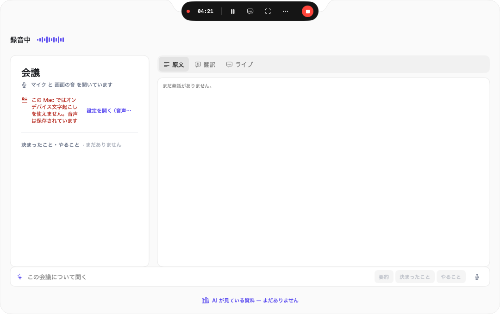
light · 1080×680 px (1x) · sha256 419bb74c7426cb50… 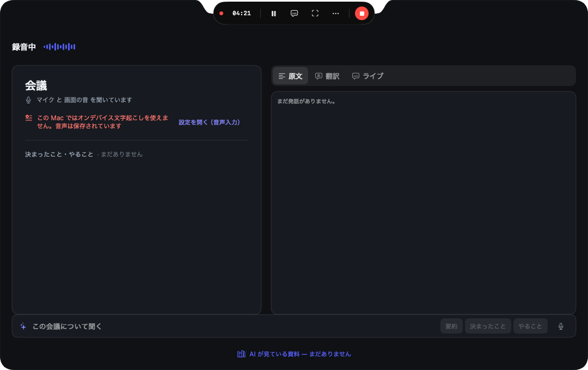
dark · 1080×680 px (1x) · sha256 9dc35e8a5baf19e5…
Trigger / どこから開くか STT モデルが無い / 初期化に失敗。 Meaning / 何をする画面か 録音はできるが文字にならないことを、録る前に言う。 Primary action 設定を開く（システム設定 > キーボード > 音声入力） Secondary action 録音は続く（音声は保存される） 表示される状態 RecordingRuntime.transcriptionUnavailable = true（録音中） Esc / keyboard — Privacy / external side effect 外へ送って代替しない。 前の画面 meeting.controller 次の画面 — Window / One Surface Workspace（録音面）。Dock / Main には出ない Truth invariant 黙って空の文字起こしにしない。 Appearance policy adaptive Note 録音面の 1 行と Dock の字幕 / 文字起こしの空状態に、理由と直しに行く道を出す。 Source RC RC SHA 85b8333
評価軸: Hierarchy · Density · Alignment · Typography · Contrast · State legibility · Primary-action clarity · Screen occupation · Surface continuity · Calmness · Consistency · Trust/provenance · Error recovery clarity · Competitive polish → KEEP / FIX / NOT_ENOUGH_EVIDENCE
System — Speech recognition denied 6. System / Recovery · system.speech-permission · required=true · status=CAPTURED
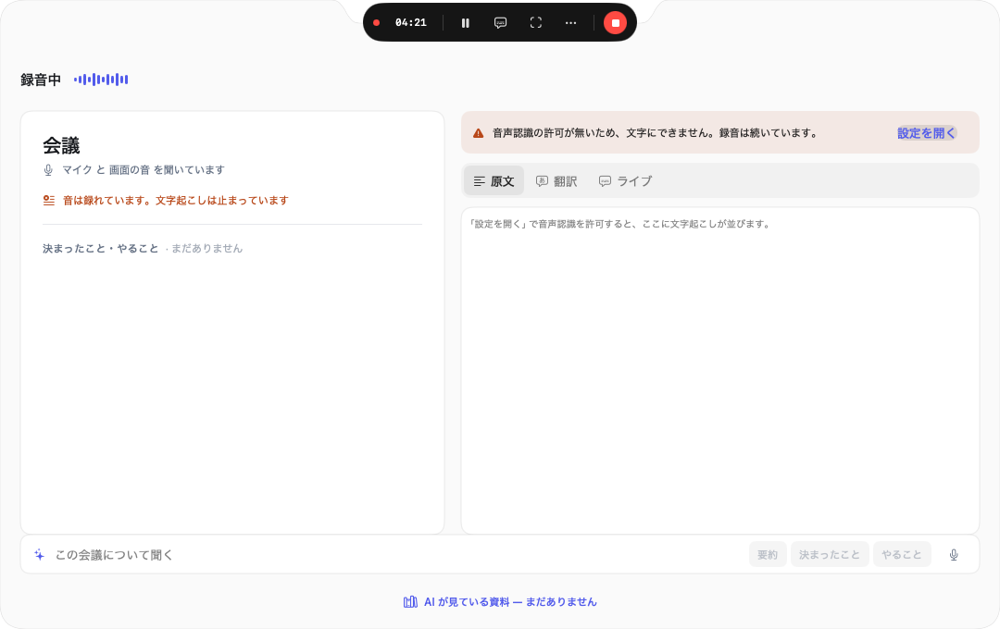
light · 1080×680 px (1x) · sha256 f8221c4cd24928be… 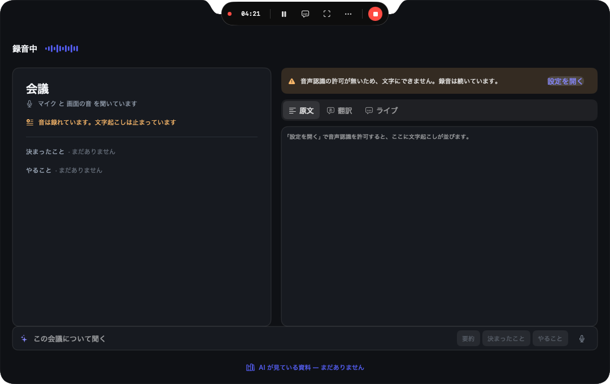
dark · 1080×680 px (1x) · sha256 3109335e7ce0f466…
Trigger / どこから開くか 録音を始めた瞬間に音声認識（Apple Speech）の許可を求め、断られた。 Meaning / 何をする画面か 音は録れている。文字にはできない。理由と直しに行く道が出る。 Primary action 設定を開く（音声認識） Secondary action 録音は続く 表示される状態 permissionIssue = speechDenied Esc / keyboard — Privacy / external side effect 音声認識はこの Mac の中（サーバへは出さない）。求めるのは録音を始めた瞬間だけ。 前の画面 recording.workspace 次の画面 recording.workspace Window / One Surface Workspace（録音面） Truth invariant 黙って空の文字起こしにしない。「まだ発話がありません」と言わない。 Appearance policy adaptive Note REAL_MEETING の実マイク経路で発見: 音声認識の許可を誰も求めておらず、初回は文字起こしが一度も動かなかった。PermissionCenter の .meeting に音声認識を足し、拒否ならこの面。 Source RC RC SHA 85b8333
評価軸: Hierarchy · Density · Alignment · Typography · Contrast · State legibility · Primary-action clarity · Screen occupation · Surface continuity · Calmness · Consistency · Trust/provenance · Error recovery clarity · Competitive polish → KEEP / FIX / NOT_ENOUGH_EVIDENCE
System — Calendar permission (purpose-first) 6. System / Recovery · system.calendar-permission · required=true · status=CAPTURED
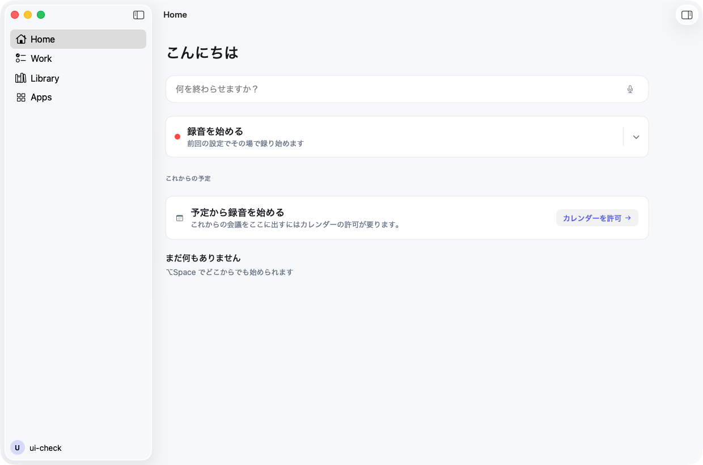
light · 1240×820 px (1x) · sha256 88c34b3e14641615… 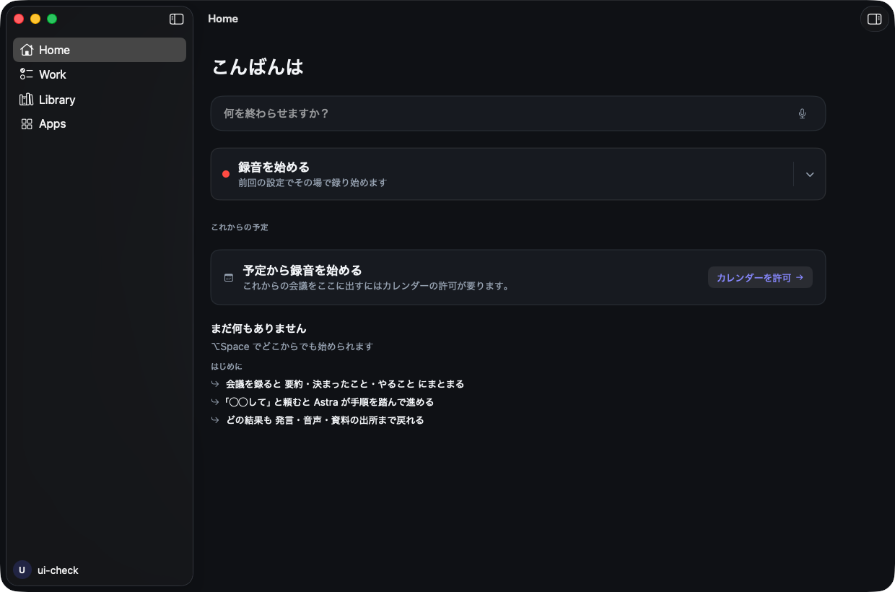
dark · 1240×820 px (1x) · sha256 d7662fc149aa1a3c…
Trigger / どこから開くか Home が予定を出そうとした（未確認）。 Meaning / 何をする画面か 理由を先に言ってから求める。 Primary action 許可… Secondary action あとで 表示される状態 notDetermined / denied Esc / keyboard — Privacy / external side effect 起動経路で求めない（PERMISSION_JIT_OK）。 前の画面 main.home 次の画面 main.home-upcoming Window / One Surface Main Window Truth invariant 許可直後にその場で予定が並ぶ（LIVE_TCC）。 Appearance policy adaptive Note Permissions.simulatedCalendar = notDetermined、予定の差し込み無し。Home は開くたびに許可の状態を読み直す（以前は初回の値のままだった）。 Source RC RC SHA 85b8333
評価軸: Hierarchy · Density · Alignment · Typography · Contrast · State legibility · Primary-action clarity · Screen occupation · Surface continuity · Calmness · Consistency · Trust/provenance · Error recovery clarity · Competitive polish → KEEP / FIX / NOT_ENOUGH_EVIDENCE
System — Input Monitoring（⌥Space）/ Accessibility 6. System / Recovery · system.accessibility-permission · required=true · status=CAPTURED
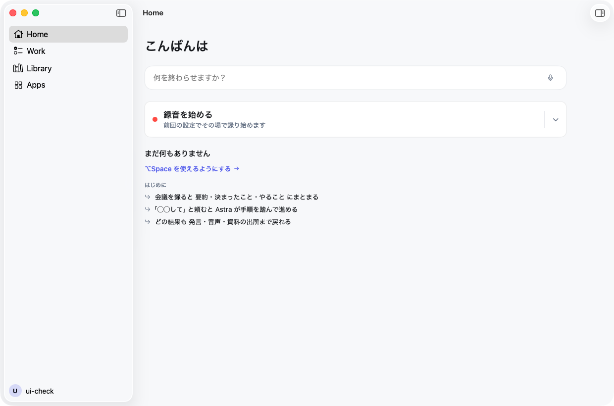
light · 1240×820 px (1x) · sha256 77d238f5bc473135… 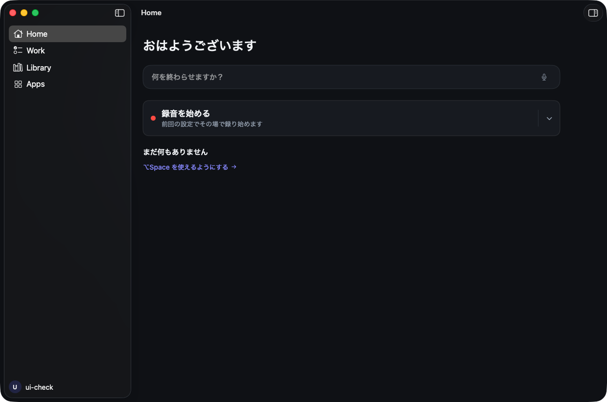
dark · 1240×820 px (1x) · sha256 414757f969710229…
Trigger / どこから開くか 入力欄へ書こうとした / ⌥Space が拾えない。 Meaning / 何をする画面か 何のために要るかを先に言う。 Primary action ⌥Space を使えるようにする（許可を求める） Secondary action （そのまま使う） 表示される状態 Permissions.inputMonitoring = notDetermined Esc / keyboard — Privacy / external side effect purpose-first。 前の画面 dock.confirmation 次の画面 — Window / One Surface Main Window（Home の空状態）。Dock は登録できないとき「クリック」案内に変わる Truth invariant — Appearance policy adaptive Note アクセシビリティ（入力欄へ書く）の許可を求める面は無い。Capability.control.reason の文はあるが、どの view も読んでいない（製品側の FIX 候補）。 Source RC RC SHA 85b8333
評価軸: Hierarchy · Density · Alignment · Typography · Contrast · State legibility · Primary-action clarity · Screen occupation · Surface continuity · Calmness · Consistency · Trust/provenance · Error recovery clarity · Competitive polish → KEEP / FIX / NOT_ENOUGH_EVIDENCE
System — Update available 6. System / Recovery · system.update-available · required=true · status=CAPTURED
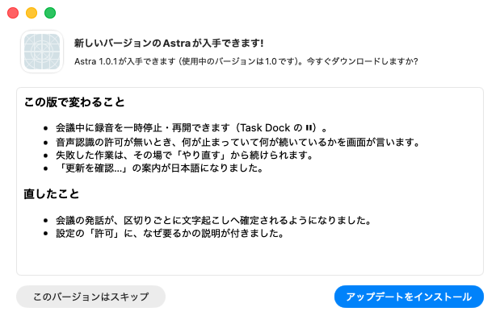
light · 619×402 px (1x) · sha256 f1fc7b385c1bd41d… 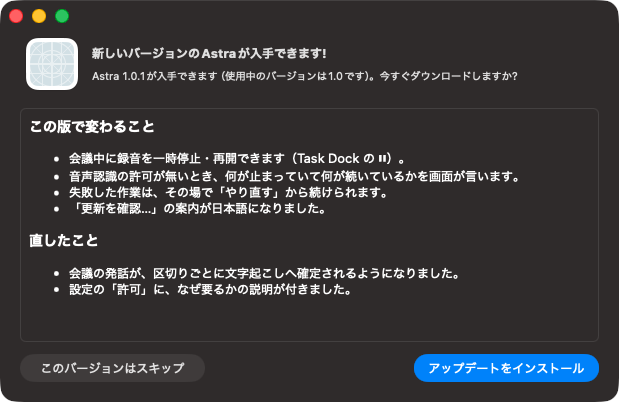
dark · 619×402 px (1x) · sha256 b0e06c8ecd3a5a60…
Trigger / どこから開くか メニュー「更新を確認…」/ 自動。 Meaning / 何をする画面か 新しい版があること、何が変わるか、入れるか。 Primary action 更新する Secondary action あとで 表示される状態 available Esc / keyboard — Privacy / external side effect appcast の取得だけが外へ出る。 前の画面 — 次の画面 — Window / One Surface Sparkle window Truth invariant SUFeedURL / SUPublicEDKey が揃っていないときは「確かめていない」と言う。 Appearance policy adaptive Note 本物の Sparkle の窓。capture-rc.sh が 127.0.0.1 の http で配る appcast（版 999.0.0）を読ませる。バンドルが ja.lproj を持つので Sparkle の窓も日本語。 Source RC RC SHA 85b8333
評価軸: Hierarchy · Density · Alignment · Typography · Contrast · State legibility · Primary-action clarity · Screen occupation · Surface continuity · Calmness · Consistency · Trust/provenance · Error recovery clarity · Competitive polish → KEEP / FIX / NOT_ENOUGH_EVIDENCE
System — Up to date / cannot check 6. System / Recovery · system.update-unavailable · required=true · status=CAPTURED
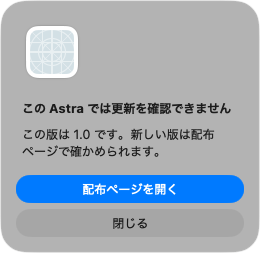
light · 260×253 px (1x) · sha256 88cf5596b8ea8355… 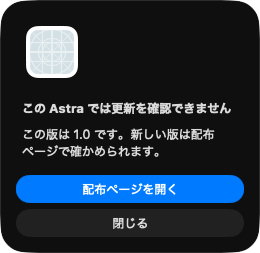
dark · 260×253 px (1x) · sha256 6f1b8036f3a5945d…
Trigger / どこから開くか 更新を確認… Meaning / 何をする画面か 最新である / 確かめられない、を区別して言う。 Primary action OK Secondary action — 表示される状態 misconfigured（この実行体で確かめられない） Esc / keyboard — Privacy / external side effect — 前の画面 — 次の画面 — Window / One Surface Sparkle window / alert Truth invariant 確かめていないのに「最新」と言わない。 Appearance policy adaptive Note Astra 自身の alert。理由は実行体の事実（SoftwareUpdate.misconfiguration）。Sparkle の「最新です」は同じプロセスで 2 度目の確認が捨てられるため Atlas では撮らない。 Source RC RC SHA 85b8333
評価軸: Hierarchy · Density · Alignment · Typography · Contrast · State legibility · Primary-action clarity · Screen occupation · Surface continuity · Calmness · Consistency · Trust/provenance · Error recovery clarity · Competitive polish → KEEP / FIX / NOT_ENOUGH_EVIDENCE
System — Generic action failure 6. System / Recovery · system.generic-failure · required=true · status=CAPTURED
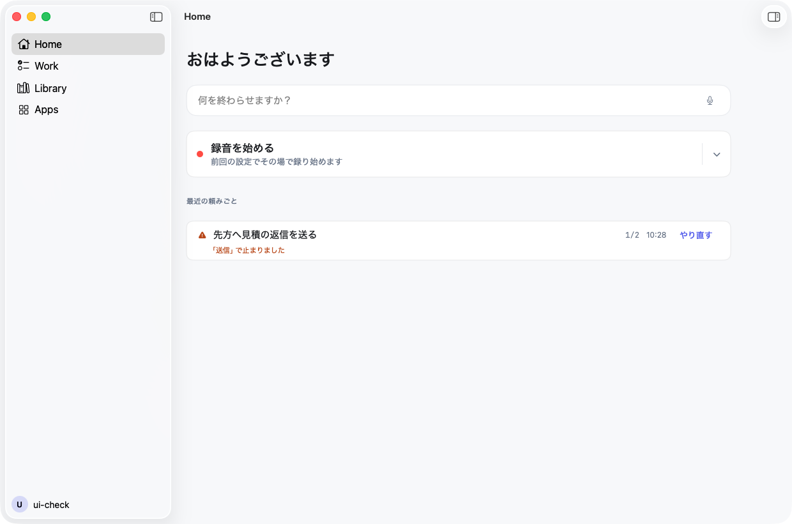
light · 1240×820 px (1x) · sha256 1d2a53fa2ebad747… 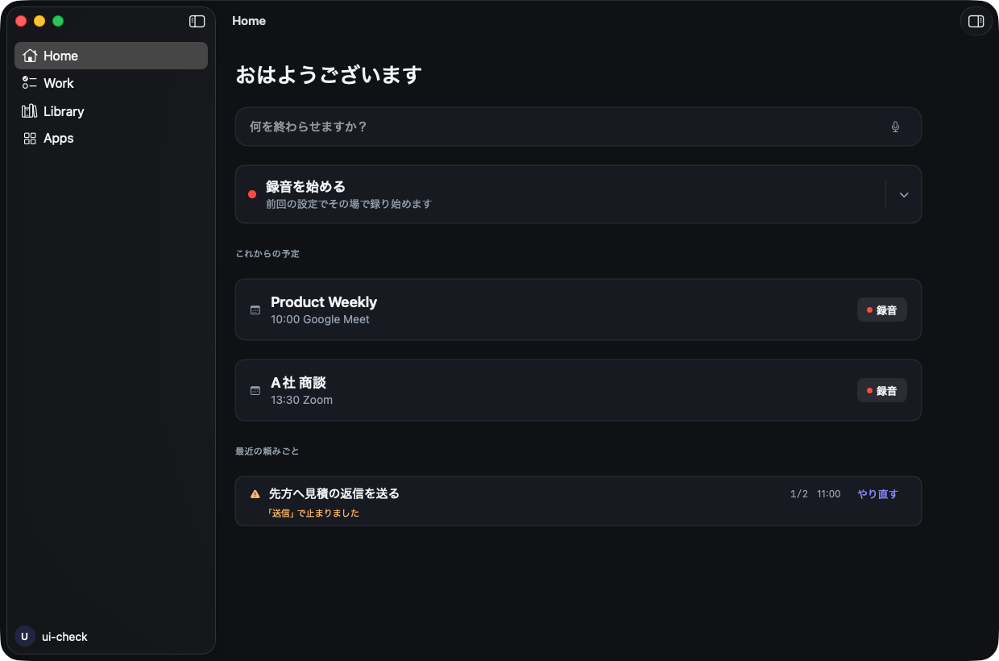
dark · 1240×820 px (1x) · sha256 338948402d45f099…
Trigger / どこから開くか 依頼が失敗した。 Meaning / 何をする画面か 何が失敗して、次に何ができるか。 Primary action やり直す（行の中） Secondary action どこで止まったかを読む（失敗した段の文） 表示される状態 AgentTask.status = failed（LocalStore） Esc / keyboard — Privacy / external side effect — 前の画面 main.home 次の画面 — Window / One Surface Main Window（Home の「最近の頼みごと」） Truth invariant 黙らない。 Appearance policy adaptive Note Home の行が失敗した段の理由を言い、同じ入口（AI 操作）でやり直せる。 Source RC RC SHA 85b8333
評価軸: Hierarchy · Density · Alignment · Typography · Contrast · State legibility · Primary-action clarity · Screen occupation · Surface continuity · Calmness · Consistency · Trust/provenance · Error recovery clarity · Competitive polish → KEEP / FIX / NOT_ENOUGH_EVIDENCE
Settings — 許可（OS）/ shortcuts 6. System / Recovery · settings.permissions · required=true · status=CAPTURED
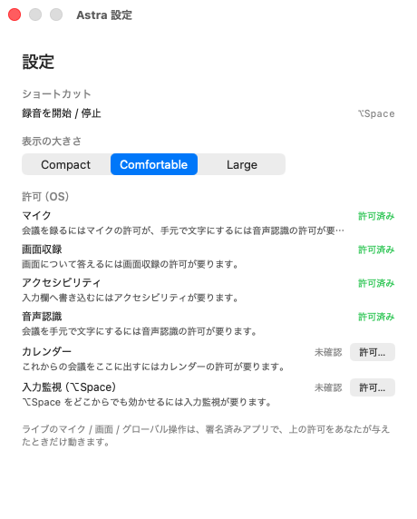
light · 460×572 px (1x) · sha256 5cfd628b31023579… 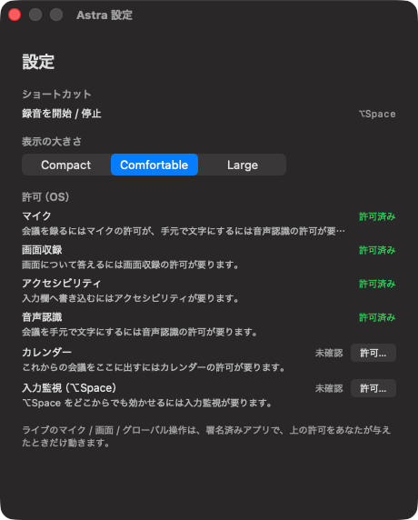
dark · 460×572 px (1x) · sha256 0f734008fae07e6b…
Trigger / どこから開くか ⌘, / メニュー。 Meaning / 何をする画面か OS 許可の現状と、ショートカット。 Primary action 許可… Secondary action — 表示される状態 — Esc / keyboard ⌘,。 Privacy / external side effect 各許可に理由が書いてある。 前の画面 main.home 次の画面 — Window / One Surface Settings window Truth invariant — Appearance policy adaptive Note 各行に「何のために要るか」（PermissionCenter.Capability.reason）を添えた。窓は 460×500。予定と ⌥Space を未確認にして「許可…」の在る姿を残す。 Source RC RC SHA 85b8333
評価軸: Hierarchy · Density · Alignment · Typography · Contrast · State legibility · Primary-action clarity · Screen occupation · Surface continuity · Calmness · Consistency · Trust/provenance · Error recovery clarity · Competitive polish → KEEP / FIX / NOT_ENOUGH_EVIDENCE
Guided Setup — Intro 6. System / Recovery · guided-setup.intro · required=true · status=CAPTURED
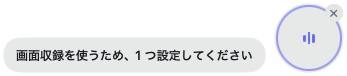
light · 312×134 px (1x) · sha256 f1f3cb43d8b12780… 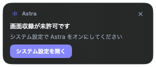
dark · 312×134 px (1x) · sha256 0f319bd4b1f29cbb…
Trigger / どこから開くか メニューバー「権限の設定を案内…」。または機能が権限を要した瞬間。 Meaning / 何をする画面か 右下（visibleFrame の右 24pt・下 24pt）に Astra の署名つきの案内カード: 1 行目 = 状態「画面収録が未許可です」、2 行目 = すること、塗りの CTA「システム設定を開く」。独立したアバターの丸は置かない（署名は CTA より弱い階層）。 Primary action そのまま待つ（System Settings が開く） Secondary action × で案内をやめる 表示される状態 screenCaptureIntro Esc / keyboard なし（キーボード操作は System Settings 側）。 Privacy / external side effect 権限は変えない・求めない。案内するだけ。 前の画面 — 次の画面 guided-setup.target-found Window / One Surface FloatingPanel（案内カード 1 枚、nonactivating、key/main にならない） Truth invariant System Settings を書き換えない。全画面の透明窓を作らない。 Appearance policy adaptive Note — Source RC RC SHA 85b8333
評価軸: Hierarchy · Density · Alignment · Typography · Contrast · State legibility · Primary-action clarity · Screen occupation · Surface continuity · Calmness · Consistency · Trust/provenance · Error recovery clarity · Competitive polish → KEEP / FIX / NOT_ENOUGH_EVIDENCE
Guided Setup — Target found (System Settings + highlight + callout) 6. System / Recovery · guided-setup.target-found · required=true · status=CAPTURED
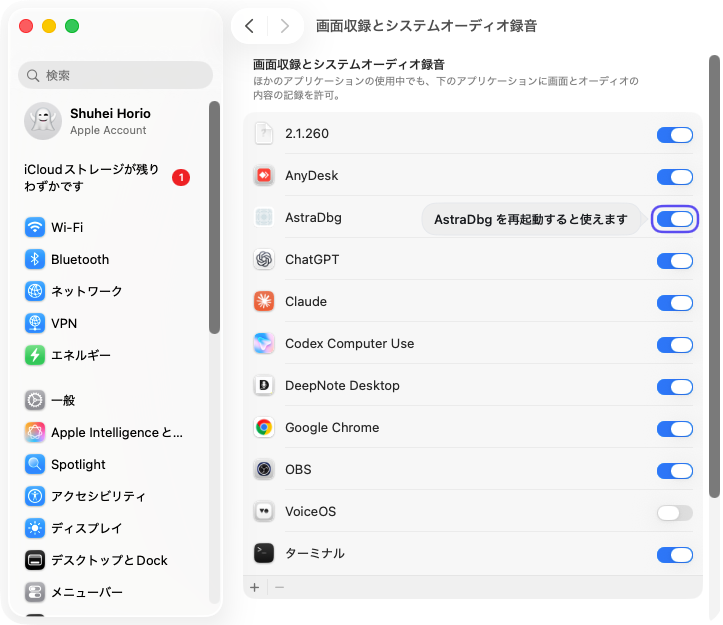
light · 723×625 px (1x) · sha256 c2be293f53d18b59…
Trigger / どこから開くか System Settings の「画面収録とシステムオーディオ録音」が開き、AX で Astra 行のスイッチ（identifier `<App>_Toggle`）を特定した。 Meaning / 何をする画面か 対象の行のスイッチだけを角丸で囲い、その**横**に「← <行の名前> をオンにしてください」。吹き出しは見つけた行の名前で言う（一覧の名前と別名で呼ばない）。上下に置くと隣の行のスイッチを隠すので横に置く。 Primary action Astra のスイッチをオンにする（System Settings をそのまま操作できる） Secondary action × で案内をやめる 表示される状態 guidingScreenCapture → waitingScreenCapture Esc / keyboard System Settings のキーボード操作はそのまま効く（Astra の窓は mouse を通す）。 Privacy / external side effect 権限は変えない。付与は CGPreflightScreenCaptureAccess で検知する。 前の画面 guided-setup.intro 次の画面 guided-setup.target-highlighted, guided-setup.granted Window / One Surface FloatingPanel × 2（ハイライト / 吹き出し。ignoresMouseEvents = true）+ Apple の System Settings 窓（合成） Truth invariant 固定座標 0。見つからなければ推測位置に出さない。highlight ⊇ target、bubble ∩ toggle = ∅（GUIDED_SETUP_GEOMETRY）。 Appearance policy adaptive Note System Settings の窓は Apple のもの。Astra が描いたのはハイライトと吹き出しの 2 窓だけ。dark は System Settings が OS の外観のままなので撮らない。 盲検 review の対象外（Apple の窓が大半で、judge が OS の一覧まで採点する）。Astra が描いた部分の盲検は guided-setup.target-highlighted で、幾何は GUIDED_SETUP_GEOMETRY で見る。 Source RC RC SHA 85b8333
評価軸: Hierarchy · Density · Alignment · Typography · Contrast · State legibility · Primary-action clarity · Screen occupation · Surface continuity · Calmness · Consistency · Trust/provenance · Error recovery clarity · Competitive polish → KEEP / FIX / NOT_ENOUGH_EVIDENCE
Guided Setup — Astra not listed yet (add with +) 6. System / Recovery · guided-setup.target-add · required=true · status=CAPTURED
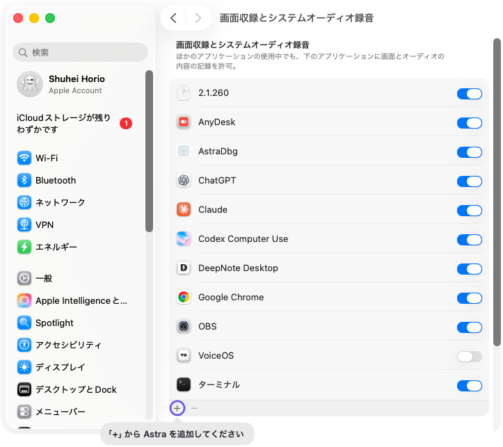
light · 723×643 px (1x) · sha256 70bd4239ec3aba04…
Trigger / どこから開くか System Settings の「画面収録とシステムオーディオ録音」に Astra の行がまだ無い（画面収録を一度も求めていない Mac）。 Meaning / 何をする画面か 「+」だけを囲い、その**下**に「「+」から Astra を追加してください」。横に置くと隣の「−」を隠す（盲検 3/3）。 Primary action 「+」で Astra を追加し、スイッチをオンにする Secondary action × で案内をやめる 表示される状態 guidingScreenCapture → waitingScreenCapture（anchor = + ボタン） Esc / keyboard System Settings のキーボード操作はそのまま効く。 Privacy / external side effect 権限は変えない。 前の画面 guided-setup.intro 次の画面 guided-setup.target-found Window / One Surface FloatingPanel × 2 + System Settings（合成） Truth invariant 吹き出しが「+」「−」のどちらも隠さない（GUIDED_SETUP_GEOMETRY: bubble ∩ minus = ∅）。行が現れたら行の案内に切り替わる。 Appearance policy adaptive Note System Settings の窓は Apple のもの。一覧の他の行（第三者アプリ）はこの Mac の環境で、Astra のものではない。 盲検 review の対象外（Apple の窓が大半で、judge が OS の一覧まで採点する）。Astra が描いた部分の盲検は guided-setup.target-highlighted で、幾何は GUIDED_SETUP_GEOMETRY で見る。 Source RC RC SHA 85b8333
評価軸: Hierarchy · Density · Alignment · Typography · Contrast · State legibility · Primary-action clarity · Screen occupation · Surface continuity · Calmness · Consistency · Trust/provenance · Error recovery clarity · Competitive polish → KEEP / FIX / NOT_ENOUGH_EVIDENCE
Guided Setup — Target highlighted (detail) 6. System / Recovery · guided-setup.target-highlighted · required=true · status=CAPTURED
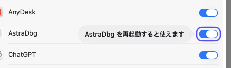
light · 454×134 px (1x) · sha256 29e3c0aeb2180f18…
Trigger / どこから開くか 同上（対象の周りを 2 倍で切り出し）。 Meaning / 何をする画面か 対象行のスイッチとハイライト、吹き出しの矢印の関係を近くで見る。 Primary action Astra のスイッチをオンにする Secondary action — 表示される状態 guidingScreenCapture Esc / keyboard — Privacy / external side effect 権限は変えない。 前の画面 guided-setup.target-found 次の画面 — Window / One Surface FloatingPanel × 2 + System Settings の一部 Truth invariant 吹き出しがスイッチを隠さない。対象行を誤認させない。 Appearance policy adaptive Note target-found の切り出し（同じ capture）。 Source RC RC SHA 85b8333
評価軸: Hierarchy · Density · Alignment · Typography · Contrast · State legibility · Primary-action clarity · Screen occupation · Surface continuity · Calmness · Consistency · Trust/provenance · Error recovery clarity · Competitive polish → KEEP / FIX / NOT_ENOUGH_EVIDENCE
Guided Setup — Follows the window (repositioned) 6. System / Recovery · guided-setup.repositioned · required=true · status=CAPTURED
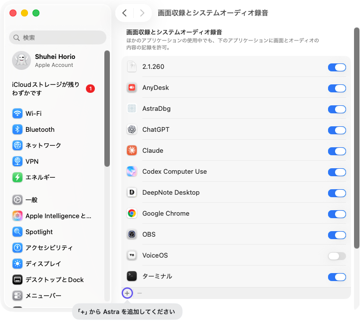
light · 723×625 px (1x) · sha256 5a7fc024aaa72be9…
Trigger / どこから開くか 利用者が System Settings の窓をドラッグした（selftest は CGEvent で実ドラッグ）。 Meaning / 何をする画面か AXObserver の出来事で対象を取り直し、ハイライトと吹き出しが新しい位置へ付いて行く。polling しない。 Primary action Astra のスイッチをオンにする Secondary action — 表示される状態 waitingScreenCapture（追従） Esc / keyboard — Privacy / external side effect 権限は変えない。 前の画面 guided-setup.target-found 次の画面 — Window / One Surface FloatingPanel × 2 + System Settings Truth invariant 画面端では吹き出しを画面内に clamp。マルチディスプレイでは対象の画面に置く。 Appearance policy adaptive Note 盲検 review の対象外（Apple の窓が大半で、judge が OS の一覧まで採点する）。Astra が描いた部分の盲検は guided-setup.target-highlighted で、幾何は GUIDED_SETUP_GEOMETRY で見る。 Source RC RC SHA 85b8333
評価軸: Hierarchy · Density · Alignment · Typography · Contrast · State legibility · Primary-action clarity · Screen occupation · Surface continuity · Calmness · Consistency · Trust/provenance · Error recovery clarity · Competitive polish → KEEP / FIX / NOT_ENOUGH_EVIDENCE
Guided Setup — Target missing (generic fallback) 6. System / Recovery · guided-setup.target-missing · required=true · status=CAPTURED
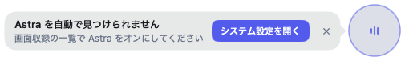
light · 312×134 px (1x) · sha256 d909c5a137080c9a… 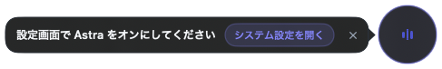
dark · 312×134 px (1x) · sha256 fa0c1325f6e86b10…
Trigger / どこから開くか System Settings は開いたが、AX で Astra 行が見つからない（一覧に未追加・OS 更新で構造が変わった・AX 未許可）。 Meaning / 何をする画面か ハイライトも吹き出しも出さず、案内カードだけ「設定画面で Astra をオンにしてください」。推測位置に出さない。 Primary action 設定画面で Astra を探してオンにする Secondary action × で案内をやめる 表示される状態 waitingScreenCapture（anchor = nil） Esc / keyboard — Privacy / external side effect 権限は変えない。 前の画面 guided-setup.intro 次の画面 — Window / One Surface FloatingPanel（案内カード 1 枚） Truth invariant confidence が無いときに近い行を当てない（0 candidates → generic fallback に固定）。 Appearance policy adaptive Note — Source RC RC SHA 85b8333
評価軸: Hierarchy · Density · Alignment · Typography · Contrast · State legibility · Primary-action clarity · Screen occupation · Surface continuity · Calmness · Consistency · Trust/provenance · Error recovery clarity · Competitive polish → KEEP / FIX / NOT_ENOUGH_EVIDENCE
Guided Setup — Granted 6. System / Recovery · guided-setup.granted · required=true · status=CAPTURED
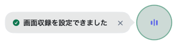
light · 312×78 px (1x) · sha256 9ca24174f2d2ba4d… 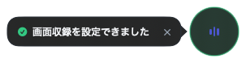
dark · 312×78 px (1x) · sha256 ec2109e3dd2f7bb1…
Trigger / どこから開くか 利用者がスイッチをオンにした。OS API（CGPreflightScreenCaptureAccess / AXIsProcessTrusted / AVCaptureDevice）が許可を返した。 Meaning / 何をする画面か ハイライトと吹き出しが消え、カードが success「設定できました ✓」。次の権限があれば続き、無ければ「すべて設定できました ✓」。 Primary action 何もしなくてよい（自動で次へ） Secondary action — 表示される状態 granted → 次の intro / completed Esc / keyboard — Privacy / external side effect 権限を読むだけ（変えない）。 前の画面 guided-setup.target-found 次の画面 voice.idle Window / One Surface FloatingPanel（案内カード 1 枚） Truth invariant 付与は OS API で確かめる（画面の見た目で判定しない）。 Appearance policy adaptive Note — Source RC RC SHA 85b8333
評価軸: Hierarchy · Density · Alignment · Typography · Contrast · State legibility · Primary-action clarity · Screen occupation · Surface continuity · Calmness · Consistency · Trust/provenance · Error recovery clarity · Competitive polish → KEEP / FIX / NOT_ENOUGH_EVIDENCE
Guided Setup — Could not open settings (warning) 6. System / Recovery · guided-setup.denied · required=true · status=CAPTURED
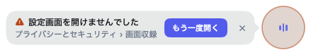
light · 312×134 px (1x) · sha256 f7adcb38f268266d… 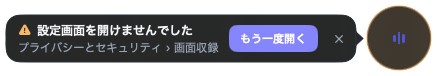
dark · 312×134 px (1x) · sha256 72814b2bc63a7329…
Trigger / どこから開くか System Settings が 15 秒たっても現れない（開けない）。 Meaning / 何をする画面か カードが warning「設定画面を開けませんでした。システム設定から Astra をオンにしてください」。黙って消えない。 Primary action システム設定を自分で開いて Astra をオンにする Secondary action × で案内をやめる 表示される状態 failed(設定画面を開けませんでした) Esc / keyboard — Privacy / external side effect 権限は変えない。 前の画面 guided-setup.intro 次の画面 — Window / One Surface FloatingPanel（案内カード 1 枚） Truth invariant 失敗を成功に見せない。やり直す道を 1 つ示す。 Appearance policy adaptive Note — Source RC RC SHA 85b8333
評価軸: Hierarchy · Density · Alignment · Typography · Contrast · State legibility · Primary-action clarity · Screen occupation · Surface continuity · Calmness · Consistency · Trust/provenance · Error recovery clarity · Competitive polish → KEEP / FIX / NOT_ENOUGH_EVIDENCE
Control — neutral 7. Control states · components.neutral · required=true · status=CAPTURED
light · 1080×680 px (1x) · sha256 c03c325ee9ef35f8… dark · 1080×680 px (1x) · sha256 0548147c43bb7c17…
Trigger / どこから開くか — Meaning / 何をする画面か 基準。 Primary action — Secondary action — 表示される状態 neutral Esc / keyboard — Privacy / external side effect — 前の画面 — 次の画面 — Window / One Surface — Truth invariant — Appearance policy adaptive Note — Source RC RC SHA 85b8333
評価軸: Hierarchy · Density · Alignment · Typography · Contrast · State legibility · Primary-action clarity · Screen occupation · Surface continuity · Calmness · Consistency · Trust/provenance · Error recovery clarity · Competitive polish → KEEP / FIX / NOT_ENOUGH_EVIDENCE
Control — hover 7. Control states · components.hover · required=true · status=CAPTURED
light · 1080×680 px (1x) · sha256 1e2f4b9b83f65221… dark · 1080×680 px (1x) · sha256 c018eeefb60b70d5…
Trigger / どこから開くか ポインタが乗った。 Meaning / 何をする画面か 押せることが分かる。 Primary action — Secondary action — 表示される状態 hover Esc / keyboard — Privacy / external side effect — 前の画面 — 次の画面 — Window / One Surface — Truth invariant neutral と画素が違う。 Appearance policy adaptive Note — Source RC RC SHA 85b8333
評価軸: Hierarchy · Density · Alignment · Typography · Contrast · State legibility · Primary-action clarity · Screen occupation · Surface continuity · Calmness · Consistency · Trust/provenance · Error recovery clarity · Competitive polish → KEEP / FIX / NOT_ENOUGH_EVIDENCE
Control — focus 7. Control states · components.focus · required=true · status=CAPTURED
light · 1080×680 px (1x) · sha256 24c39ea2b8e7cdd1… dark · 1080×680 px (1x) · sha256 6a874eeed699f6a5…
Trigger / どこから開くか Tab で焦点。 Meaning / 何をする画面か キーボードで今どこか分かる。 Primary action — Secondary action — 表示される状態 focus Esc / keyboard Tab。 Privacy / external side effect — 前の画面 — 次の画面 — Window / One Surface — Truth invariant focus ring が見える（ACCESSIBILITY）。 Appearance policy adaptive Note — Source RC RC SHA 85b8333
評価軸: Hierarchy · Density · Alignment · Typography · Contrast · State legibility · Primary-action clarity · Screen occupation · Surface continuity · Calmness · Consistency · Trust/provenance · Error recovery clarity · Competitive polish → KEEP / FIX / NOT_ENOUGH_EVIDENCE
Control — pressed 7. Control states · components.pressed · required=true · status=CAPTURED
light · 1080×680 px (1x) · sha256 005f922fb915dcb2… dark · 1080×680 px (1x) · sha256 0d3e0802a1740719…
Trigger / どこから開くか 押している間。 Meaning / 何をする画面か — Primary action — Secondary action — 表示される状態 pressed Esc / keyboard — Privacy / external side effect — 前の画面 — 次の画面 — Window / One Surface — Truth invariant neutral と画素が違う。 Appearance policy adaptive Note — Source RC RC SHA 85b8333
評価軸: Hierarchy · Density · Alignment · Typography · Contrast · State legibility · Primary-action clarity · Screen occupation · Surface continuity · Calmness · Consistency · Trust/provenance · Error recovery clarity · Competitive polish → KEEP / FIX / NOT_ENOUGH_EVIDENCE
Strip — Idle → Preparing → Listening strip.idle-preparing-listening · status=CAPTURED
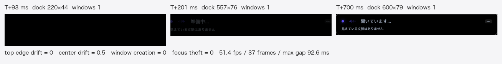
top_edge_drift_pt 0 center_drift_pt 0.5 window_creation 0 focus_theft 0 effective_fps 50.0 frames 36 max_gap_ms 113.6 same_dock_id_pct 100 missing_surface_frames 0 expected_windows 1 frames (ms) [114, 201, 701]
Strip — Dock → Running strip.dock-running · status=CAPTURED
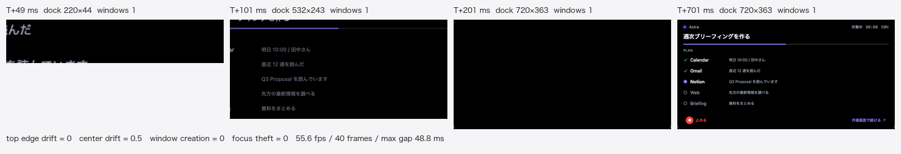
top_edge_drift_pt 0 center_drift_pt 0.5 window_creation 0 focus_theft 0 effective_fps 54.2 frames 39 max_gap_ms 58.3 same_dock_id_pct 100 missing_surface_frames 0 expected_windows 1 frames (ms) [58, 100, 201, 701]
Strip — Running → Confirmation strip.running-confirmation · status=CAPTURED
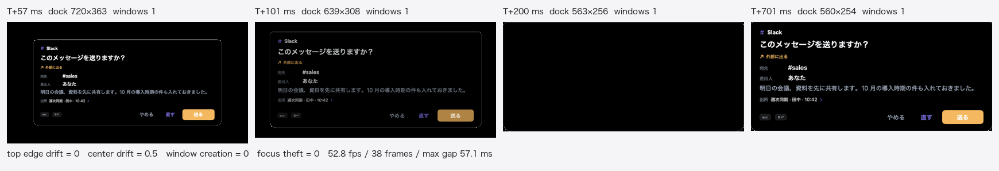
top_edge_drift_pt 0 center_drift_pt 0.5 window_creation 0 focus_theft 0 effective_fps 54.2 frames 39 max_gap_ms 59.1 same_dock_id_pct 100 missing_surface_frames 0 expected_windows 1 frames (ms) [59, 101, 200, 701]
Strip — Meeting Controller → Notes strip.controller-notes · status=CAPTURED
top_edge_drift_pt 0 center_drift_pt 0 window_creation 0 focus_theft 0 effective_fps 57.1 frames 41 max_gap_ms 26.0 same_dock_id_pct 100 missing_surface_frames 0 expected_windows 1 frames (ms) [26, 51, 100, 200, 700]
Strip — Notes → Workspace strip.notes-workspace · status=CAPTURED
top_edge_drift_pt 0 center_drift_pt 0 window_creation 0 focus_theft 0 effective_fps 52.8 frames 38 max_gap_ms 81.6 same_dock_id_pct 100 missing_surface_frames 0 expected_windows 2 frames (ms) [82, 100, 201, 701]
Reality gates（静止画では証明できない 3 つ + hands-on）
REAL_MEETING AUTOMATION_MISSING scripts/reality/run-real-meeting.sh（2 台自動: PC B が Playwright で Meet に入り固定 WAV を流す）ACCESSIBILITY AUTOMATION_MISSING scripts/reality/run-fka.sh + run-voiceover.sh（CGEvent で Tab / VoiceOver 実起動、AX の role/title/value を証拠に）LIVE_TCC AUTOMATION_MISSING scripts/reality/run-live-tcc.sh（tccutil reset → 実ダイアログ自動押下 → 拒否 UI → 設定で ON → 復帰）WORLD_CLASS hands-on AUTOMATION_MISSING scripts/reality/run-competitors.sh（競合実 UI を同条件で撮り、3 judge の盲検へ）
実行後に結果をここへ追記して、Atlas を Visual + Reality Release Certificate にする。